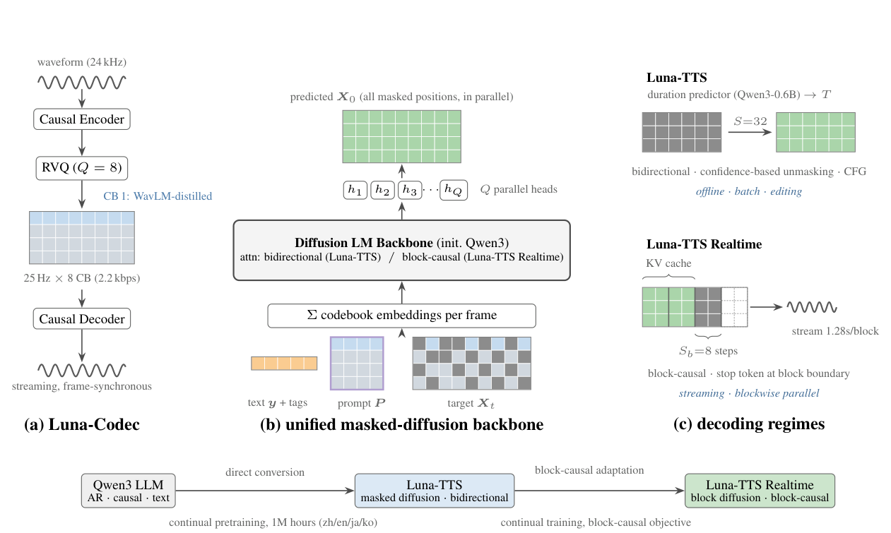
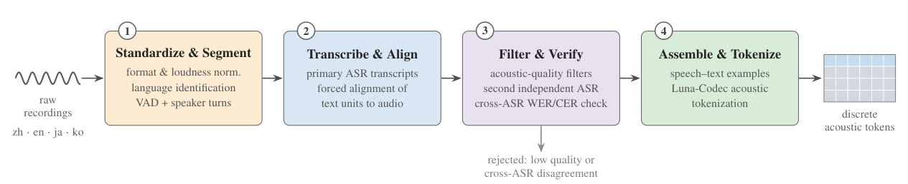

VUI Labs 研究团队VUI Labs Research
https://vuilabs-ai.github.io/luna-tts
项目页面：https://vuilabs-ai.github.io/luna-tts。
摘要ABSTRACT
Modern text-to-speech (TTS) is dominated by autoregressive (AR) codec language models, whose left-to-right decoding carries structural costs: latency that grows with utterance length, error accumulation along the committed prefix, and an artificial generation order imposed on the Residual Vector Quantization (RVQ) token grid, which possesses none. We propose Luna-TTS Family, a family of diffusion-language-model-based TTS systems pretrained on 1 million hours of speech across Chinese, English, Japanese, and Korean. The family is built by progressive adaptation of a pretrained AR text LLM, from causal to bidirectional and finally to block-causal attention, and comprises two variants sharing a single tokenizer, data pipeline, and 0.6B backbone lineage. Luna-TTS is fully non-autoregressive: it generates the entire RVQ token grid of an utterance in a fixed number of parallel refinement steps, with zero-shot voice cloning and speech editing arising natively as infilling. Luna-TTS Realtime, derived from Luna-TTS by continual training, is autoregressive over blocks of 32 codec frames (1.28s) while denoising each block in parallel; it supports KV-cached blockwise generation and incremental audio delivery after the first block is committed. Under the warmed local serving protocol, Luna-TTS Realtime achieves an end-to-end RTF of 0.0240 and commits its first 1.28s decoded audio block in 41.6 ms, corresponding to more than 40× real-time generation within the measured engine boundary. An annealed fine-tuning stage adds explicit control over emotion and non-verbal vocalizations, and a reinforcement-learning stage applies GRPO, with policy ratios computed over the realized denoising trajectory. On Seed-TTS-Eval, Luna-TTS achieves the best results on all four metrics among the compared open-source and commercial systems (0.73 CER / 79.7 SIM on test-zh, 1.49 WER / 76.8 SIM on test-en); on the harder in-the-wild CV3-Eval, it likewise posts the lowest Mandarin and English error rates in our comparison. In expressive-control evaluations against leading commercial systems, it further achieves the best results on most objective, model-based, and human-rated metrics for non-verbal vocalization and emotion control.
现代文本转语音（TTS）由自回归（AR）codec 语言模型主导，其从左到右的解码方式带有结构性代价：延迟随语句长度增长、错误沿已提交的前缀不断累积，并且把一种人为的生成顺序强加在残差向量量化（RVQ）token 网格之上，而这个网格本身并没有这种顺序。我们提出 Luna-TTS 系列：一组基于扩散语言模型的 TTS 系统，在覆盖中文、英文、日文、韩文的 1 百万小时语音上完成预训练。该系列通过对一个预训练 AR 文本 LLM 做渐进式改造（从因果注意力到双向注意力，再到块因果注意力）构建而成，包含两个共享同一分词器、数据管线和 0.6B 骨架谱系的变体。Luna-TTS 是完全非自回归的：它以固定步数的并行细化生成整句的 RVQ token 网格，零样本声音克隆与语音编辑天然地以填充（infilling）形式出现。Luna-TTS Realtime 由 Luna-TTS 经继续训练得到，它在 32 个 codec 帧（1.28 秒）组成的块上自回归，同时在每个块内部并行去噪；它支持 KV cache 块级生成，并在首个块提交后即可增量投递音频。在预热后的本地服务协议下，Luna-TTS Realtime 的端到端 RTF 达到 0.0240，并在 41.6 毫秒内提交首个 1.28 秒解码音频块，相当于在所测引擎边界内超过 40 倍实时的生成速度。一个退火微调阶段为模型加入对情绪和非语言发声的显式控制，随后的强化学习阶段应用 GRPO，其策略比值沿实际发生的去噪轨迹计算。在 Seed-TTS-Eval 上，Luna-TTS 在参与比较的开源与商用系统中拿下全部四项指标的最佳成绩（test-zh 上 0.73 CER / 79.7 SIM，test-en 上 1.49 WER / 76.8 SIM）；在更难的野外基准 CV3-Eval 上，它同样录得本次比较中最低的中文与英文错误率。在与领先商用系统的表现力控制评测中，它在非语言发声与情绪控制的多数客观指标、模型评分指标和人工评分指标上进一步取得最佳成绩。
1 引言Introduction
Text-to-speech (TTS) synthesis has been reshaped by the language-modeling paradigm. By discretizing speech with neural audio codecs [1–3] and training decoder-only Transformers with a next-token-prediction objective, neural codec language models [4, 5] turned speech synthesis into a sequence-modeling problem that inherits the scaling behavior, in-context learning ability, and infrastructure of large language models (LLMs). Scaling this recipe along data, parameters, and post-training has produced a generation of systems that achieve human-parity naturalness and robust zero-shot voice cloning from a few seconds of reference audio, including Seed-TTS [6], the CosyVoice series [7– 9], MiniMax-Speech [10], Llasa [11], GLM-TTS [12], Qwen3-TTS and Qwen-Audio-3.0-TTS [13, 14], Fish Audio S2 [15], MOSS-TTS [16], and others [17–21]. In general, all of these systems share a common computational core: an autoregressive (AR) language model that emits speech tokens strictly from left to right, one step at a time.
文本转语音（TTS）合成已被语言建模范式深刻重塑。通过用神经音频 codec [1–3] 把语音离散化，并以下一 token 预测目标训练仅解码器 Transformer，神经 codec 语言模型 [4, 5] 把语音合成变成了一个序列建模问题，从而继承了大语言模型（LLM）的缩放规律、上下文学习能力与基础设施。沿数据、参数与后训练三个维度放大这套配方，产生了一代达到人类水平自然度、并能仅凭几秒参考音频完成稳健零样本声音克隆的系统，包括 Seed-TTS [6]、CosyVoice 系列 [7–9]、MiniMax-Speech [10]、Llasa [11]、GLM-TTS [12]、Qwen3-TTS 与 Qwen-Audio-3.0-TTS [13, 14]、Fish Audio S2 [15]、MOSS-TTS [16] 等 [17–21]（原文 [7– 9] 含抽取空格，按 [7–9] 意译）。总体而言，这些系统共享同一个计算内核：一个自回归（AR）语言模型，严格从左到右、一步一个地吐出语音 token。
The autoregressive core, however, carries structural costs that are increasingly at odds with how speech tokens are actually organized. First, decoding is serial: latency and compute grow linearly with the number of generation steps, and the number of steps grows with the audio duration and the token rate. This tension is sharpest for Residual Vector Quantization (RVQ) tokenizers, which represent each frame as a stack of codebook entries: an AR model must impose an artificial generation order on a grid of tokens that has no intrinsic left-to-right structure along the codebook axis. The field has responded with an ecosystem of workarounds: delayed or interleaved codebook streams [16, 20, 22, 23], hierarchical time–depth autoregression, in which a large temporal model is paired with a lightweight withinframe decoder [15, 16, 23], and multi-codebook prediction modules that generate residual-codebook tokens from a shared temporal state [13]. Each is an increasingly sophisticated patch over the same underlying constraint. Second, AR generation is vulnerable to exposure bias and error accumulation: a sampling mistake is frozen into the prefix and propagates, manifesting as skipped words and repetitions that TTS systems routinely dedicate training stages to suppressing [13, 24]. Third, the fixed generation order precludes bidirectional refinement: an AR model cannot revisit an early frame in light of later context, and native infilling-style operations such as speech editing require bespoke mechanisms.
然而，这个自回归内核带有结构性代价，且与语音 token 实际的组织方式日益相悖。第一，解码是串行的：延迟与计算随生成步数线性增长，而步数又随音频时长与 token 速率增长。这一矛盾在残差向量量化（RVQ）分词器上最为尖锐：RVQ 把每一帧表示为一叠码本条目，而 AR 模型必须把一种人为的生成顺序强加在这个沿码本轴没有任何内在左右结构的 token 网格上。业界给出的回应是一整套变通方案：延迟或交织的码本流 [16, 20, 22, 23]；层级化的「时间—深度」自回归，即用一个大的时间模型搭配轻量的帧内解码器 [15, 16, 23]；以及从共享时间状态生成残差码本 token 的多码本预测模块 [13]。每一种方案都是打在同一底层约束上的、越来越精巧的补丁。第二，AR 生成易受曝光偏差与错误累积的影响：一次采样错误会被冻结进前缀并向后传播，表现为漏词与重复，而 TTS 系统常常要专门拿出训练阶段来压制这些现象 [13, 24]。第三，固定的生成顺序排除了双向细化：AR 模型无法根据后文上下文回头修改早先的帧，语音编辑这类天然的填充式操作也需要量身定制的机制才能实现。
Non-autoregressive (NAR) alternatives have long existed on the periphery of this ecosystem. Continuous-space models based on flow matching [25–28] decode rapidly, but they require explicit duration handling [10], do not operate in the discrete token space utilizing modern LLM stacks, and consequently forgo the text-knowledge inheritance and serving infrastructure. Masked generative discrete models such as SoundStorm [29], NaturalSpeech 3 [30], and MaskGCT [31] demonstrated years ago that the RVQ token grid can be decoded in parallel by iterative unmasking, yet these systems were built as task-specific architectures at moderate scale, disconnected from the pretraining recipes, initialization strategies, and tooling of general-purpose language models.
非自回归（NAR）替代方案长期存在于这一生态的边缘。基于流匹配的连续空间模型 [25–28] 解码很快，但它们需要显式的时长处理 [10]，不在离散 token 空间内运作、无法利用现代 LLM 技术栈，因此也放弃了文本知识继承与服务基础设施。SoundStorm [29]、NaturalSpeech 3 [30]、MaskGCT [31] 等掩码生成式离散模型多年前就证明了 RVQ token 网格可以通过迭代式去掩码并行解码，但这些系统是中等规模的任务专用架构，与通用语言模型的预训练配方、初始化策略和工具链脱节。
That disconnect is now closing from the text side. Diffusion language models (dLLMs), built on masked discrete diffusion [32–35], have matured from proof-of-concept to a competitive paradigm: LLaDA [36] and Dream [37] match similarly sized AR models at the ∼8B scale, commercial systems demonstrate order-of-magnitude decoding speedups [38, 39], and the paradigm has been scaled to 100B parameters [40]. In parallel, block diffusion [41] interpolates between the two extremes: the model is autoregressive over blocks of tokens, retaining KV caching, variablelength generation, and streaming, while denoising all tokens within a block in parallel. Practical recipes for adapting pretrained AR LLMs into (block-)diffusion decoders [42–44] mean that this entire family can inherit the linguistic knowledge of mature text LLMs rather than learning it from scratch. We argue that TTS is a natural, perhaps the natural, application domain for this machinery: the output is strongly grounded in the input text, which collapses the semantic branching factor that makes parallel decoding difficult for free-form text generation [45], and the RVQ token grid is precisely the kind of order-free, locally correlated structure that any-order masked prediction handles natively and AR decoding does not.
如今，这一断层正在从文本一侧被弥合。建立在掩码离散扩散 [32–35] 之上的扩散语言模型（dLLM）已从概念验证成熟为有竞争力的范式：LLaDA [36] 与 Dream [37] 在约 8B 规模上可与同尺寸 AR 模型匹敌，商用系统展示了数量级的解码加速 [38, 39]，该范式也已扩展到 100B 参数 [40]。与此同时，块扩散 [41] 在两种极端之间插值：模型在 token 块上自回归，保留 KV cache、变长生成与流式能力，同时对块内所有 token 并行去噪。把预训练 AR LLM 改造成（块）扩散解码器的实用配方 [42–44]，意味着这一整族模型可以继承成熟文本 LLM 的语言知识，而不是从零学起。我们认为 TTS 是这套机制天然的、也许是最天然的应用领域：输出被输入文本强约束，这塌缩了语义分支因子——正是它让自由文本的并行解码困难重重 [45]；而 RVQ token 网格恰恰是无序、局部相关的结构，任意顺序的掩码预测可以原生处理它，AR 解码则不能。
Early explorations support this view but leave the picture incomplete. On the fully parallel side, LLaDA-TTS [46] converts a compact AR text LLM into a masked-diffusion speech model and DiffuSpeech [47] adapts a text dLLM to speech, both at small data scales, while OmniVoice [48] scales masked-diffusion TTS to 581K hours with an emphasis on massive language coverage. On the block side, DiSTAR [24] interleaves AR drafting with maskeddiffusion infilling, and Chatterbox-Flash [49] converts a pretrained AR TTS decoder into a block-diffusion decoder by fine-tuning. What is still missing is (i) a streaming block-diffusion TTS backed by large-scale diffusion pretraining, rather than by post-hoc conversion of an AR checkpoint; (ii) a controlled comparison between fully parallel and block-autoregressive diffusion decoding under matched tokenizers, data, and model capacity, so that the community can directly evaluate this architectural choice; and (iii) evidence that diffusion-based TTS can meet the quality bar of production AR systems on major languages rather than in breadth-oriented settings.
早期探索支持这一观点，但图景尚不完整。在全并行一侧，LLaDA-TTS [46] 把一个小型 AR 文本 LLM 改造成掩码扩散语音模型，DiffuSpeech [47] 把文本 dLLM 适配到语音，两者的数据规模都较小；OmniVoice [48] 则把掩码扩散 TTS 扩展到 581K 小时，重点放在大规模语种覆盖上。在块扩散一侧，DiSTAR [24] 把 AR 起草与掩码扩散填充交织在一起，Chatterbox-Flash [49] 则通过微调把一个预训练 AR TTS 解码器转成块扩散解码器。仍然缺失的是：(i) 由大规模扩散预训练支撑、而非由 AR 检查点事后转换而来的流式块扩散 TTS；(ii) 在分词器、数据与模型容量对齐的条件下，对全并行与块自回归扩散解码的对照比较，让社区可以直接评估这一架构选择；(iii) 证明基于扩散的 TTS 能在主要语言上达到生产级 AR 系统的质量门槛、而非只在广覆盖场景中成立的证据。
This report presents Luna-TTS Family, a family of diffusion-language-model-based TTS systems pretrained on 1 million hours of speech spanning Chinese, English, Japanese, and Korean. Luna-TTS Family comprises two variants that share a single speech tokenizer, data pipeline, and 0.6B-parameter backbone lineage, and differ in their generation paradigm:
本报告提出 Luna-TTS 系列：一组基于扩散语言模型的 TTS 系统，在横跨中文、英文、日文、韩文的 1 百万小时语音上完成预训练。Luna-TTS 系列包含两个变体，它们共享同一语音分词器、数据管线与 0.6B 参数骨架谱系，区别在生成范式上：
• Luna-TTS is a fully non-autoregressive masked-diffusion model, trained with unrestricted random masking over the full RVQ token grid [48] and decoded by confidence-based iterative parallel sampling. It generates the entire grid of an utterance in a fixed number of refinement steps; a dedicated token-level duration predictor built on a separate text LLM (Qwen3-0.6B) supplies the target length for multilingual input. Because the model formulates generation as any-order infilling, it naturally supports both zero-shot voice cloning and speech editing within a unified framework, without requiring task-specific auxiliary mechanisms.
• Luna-TTS 是一个完全非自回归的掩码扩散模型，训练时对完整 RVQ token 网格施加无约束随机掩码 [48]，解码时采用基于置信度的迭代并行采样。它以固定步数的细化生成整句网格；一个建立在独立文本 LLM（Qwen3-0.6B）之上的 token 级时长预测器为多语言输入提供目标长度。由于模型把生成表述为任意顺序的填充，它在统一框架内天然支持零样本声音克隆与语音编辑，无需任务专用的辅助机制。
• Luna-TTS Realtime is a block-autoregressive model built on the block-diffusion objective [41], obtained from Luna-TTS by continual training for block-causal streaming. It is causal across blocks, supporting KV caching and incremental synthesis in 1.28s audio packets, while decoding all frames and codebooks within a block in parallel.
• Luna-TTS Realtime 是一个建立在块扩散目标 [41] 之上的块自回归模型，由 Luna-TTS 经面向块因果流式的继续训练得到。它在块之间保持因果性，支持 KV cache 与按 1.28 秒音频包增量合成，同时对块内所有帧与码本并行解码。
The family is built by progressive adaptation from a pretrained AR text LLM (Qwen3-0.6B), first to Luna-TTS and then to Luna-TTS Realtime (§2.4), so that both variants inherit strong multilingual text competence, which is particularly valuable for handling the morphological complexity and distinctive writing systems of Japanese and Korean. Operating directly on acoustic RVQ tokens, they drive the codec decoder without an intermediate flow-matching stage, and the intra-frame codebook stack is absorbed naturally into parallel denoising. Pretraining concludes with an annealed fine-tuning stage on high-quality and expressively annotated speech, adding controllable emotions and nonverbal vocalizations; RL post-training [50] then optimizes utterance-level rewards for content correctness and speaker similarity directly over the denoising trajectory (§4).
该系列由预训练 AR 文本 LLM（Qwen3-0.6B）渐进式改造而成，先得到 Luna-TTS，再得到 Luna-TTS Realtime（§2.4），因此两个变体都继承了强大的多语言文本能力，这对处理日文与韩文的形态复杂性和独特书写系统尤其有价值。它们直接作用在声学 RVQ token 上、驱动 codec 解码器，无需中间的流匹配阶段，帧内码本栈也被自然地纳入并行去噪之中。预训练以一个在高质量、带表现力标注语音上的退火微调阶段收尾，引入可控情绪与非语言发声；随后的 RL 后训练 [50] 直接在去噪轨迹上针对内容正确性与说话人相似度的句级奖励做优化（§4）。
Our main contributions are as follows:
我们的主要贡献如下：
• A diffusion-LLM TTS family at the production scale. To our knowledge, Luna-TTS Family is the largest pretraining effort for diffusion-based TTS to date (1M hours of speech) and the first to target Chinese, English, Japanese, and Korean. On Seed-TTS-Eval, Luna-TTS achieves the best results on all four metrics among the compared open-source and commercial systems (0.73 CER / 79.7 SIM on test-zh, 1.49 WER / 76.8 SIM on test-en), and it likewise posts the lowest Mandarin and English error rates in our comparison on the in-the-wild CV3-Eval benchmark (§6).
• 一个生产规模的扩散 LLM TTS 系列。据我们所知，Luna-TTS 系列是迄今扩散式 TTS 中规模最大的预训练工作（1 百万小时语音），也是首个面向中文、英文、日文、韩文的系统。在 Seed-TTS-Eval 上，Luna-TTS 在参与比较的开源与商用系统中拿下全部四项指标的最佳成绩（test-zh 上 0.73 CER / 79.7 SIM，test-en 上 1.49 WER / 76.8 SIM）；在野外基准 CV3-Eval 上，它同样录得本次比较中最低的中文与英文错误率（§6）。
• A progressive adaptation recipe yielding two deployment-matched variants. Luna-TTS Family is built entirely by continual training (causal →bidirectional →block-causal), with each transition inheriting the text competence and speech knowledge already acquired; the same recipe applies to any existing codec language model. To our knowledge, Luna-TTS Realtime is the first streaming block-diffusion TTS backed by large-scale diffusion pretraining rather than by conversion of an AR checkpoint [49], and because it is derived from LunaTTS under an identical tokenizer, data pipeline, and backbone, the two variants form a controlled realization of the AR–diffusion interpolation [41]: fully parallel decoding for offline throughput, and block-autoregressive decoding for incremental delivery. Choosing between them is a deployment decision, not a system migration; under the warmed local serving protocol, Luna-TTS Realtime reaches an end-to-end RTF of 0.0240 and 41.6 ms local first-block latency for a 1.28s block (§5.2).
• 一套渐进式改造配方，产出两个与部署场景匹配的变体。Luna-TTS 系列完全通过继续训练构建（因果 → 双向 → 块因果），每次转换都继承已获得的文本能力与语音知识；同一配方适用于任何现成的 codec 语言模型。据我们所知，Luna-TTS Realtime 是第一个由大规模扩散预训练支撑、而非由 AR 检查点转换而来的流式块扩散 TTS [49]；又因为它是在相同分词器、数据管线与骨架下从 Luna-TTS 派生的，两个变体构成了 AR—扩散插值 [41] 的一组受控实现：全并行解码面向离线吞吐，块自回归解码面向增量投递。在两者之间选择是部署决策而非系统迁移；在预热后的本地服务协议下，Luna-TTS Realtime 达到 0.0240 的端到端 RTF，1.28 秒块的本地首块延迟为 41.6 毫秒（§5.2）。
• Controllable expressive speech generation. We extend Luna-TTS with explicit control over utterance-level emotion and inline non-verbal vocalizations (NVVs), shaping an utterance as a coherent vocal performance: the intended emotion guides overall delivery, while context-appropriate NVVs are realized at designated positions.
• 可控的表现力语音生成。我们为 Luna-TTS 扩展了对句级情绪与内联非语言发声（NVV）的显式控制，把一句话塑造成一段连贯的发声表演：目标情绪引导整体表达，贴合语境的 NVV 在指定位置实现。
Against leading commercial systems, Luna-TTS achieves the best results on most objective, model-based, and human-rated metrics for both NVV and emotion control (§6.2).
在与领先商用系统的对比中，Luna-TTS 在 NVV 与情绪控制的多数客观指标、模型评分指标和人工评分指标上取得最佳成绩（§6.2）。
• RL post-training for masked speech-token diffusion. We show that GRPO-style RL post-training [50], previously applied to AR TTS [12, 15], transfers to the masked-diffusion setting by defining policy ratios over the token decisions actually realized along the iterative denoising trajectory, with rollout and replay evaluated under the same effective sampling policy, rather than over a left-to-right factorization (§4). The ratios are optimized against a group-relative, lexicographically ranked reward that prioritizes content correctness and breaks ties by speaker similarity.
• 面向掩码语音 token 扩散的 RL 后训练。我们证明，此前应用于 AR TTS [12, 15] 的 GRPO 式 RL 后训练 [50] 可以迁移到掩码扩散场景：把策略比值定义在沿迭代去噪轨迹实际发生的 token 决策上，并让 rollout 与回放（replay）在同一有效采样策略下评估，而不是在从左到右的因式分解上计算（§4）。策略比值针对一种组内相对、按词典序排列的奖励进行优化：先比内容正确性，平手时用说话人相似度决胜。
The remainder of this report is organized as follows. §2 describes the architecture: the Luna-Codec tokenizer, the shared masked-diffusion formulation over the token grid, and the two decoding regimes built on it. §3 details the data and the multi-stage pretraining schedule, the diffusion to block-diffusion adaptation, and the token-level duration predictor. §4 presents RL post-training over realized denoising trajectories. §5 defines the execution paths, streaming contract, and measurement protocol of the two variants. §6 evaluates zero-shot synthesis, expressive control, and dedicated-voice quality, and §7 concludes.
本报告其余部分组织如下：§2 描述架构，包括 Luna-Codec 分词器、token 网格上共享的掩码扩散表述，以及建立其上的两种解码机制；§3 详述数据与多阶段预训练日程、扩散到块扩散的适配，以及 token 级时长预测器；§4 介绍沿已实现去噪轨迹的 RL 后训练；§5 定义两个变体的执行路径、流式契约与测量协议；§6 评测零样本合成、表现力控制与专属音色质量；§7 总结。
2 架构Architecture
2.1 概览Overview
Luna-TTS Family follows a two-component design: a Residual Vector Quantization (RVQ) speech tokenizer, LunaCodec, that maps waveforms to a compact discrete token grid and back (§2.2); and a 0.6B-parameter diffusion language model that generates this grid conditioned on text and an optional reference prompt (§2.3–§2.6). Figure 1 illustrates the overall pipeline.
Luna-TTS 系列采用双组件设计：一个残差向量量化（RVQ）语音分词器 Luna-Codec，把波形映射到紧凑的离散 token 网格并能还原回来（§2.2）；以及一个 0.6B 参数的扩散语言模型，在文本与可选参考提示的条件下生成该网格（§2.3–§2.6）。图 1 展示了整体流水线。
Three principles drive the design:
三条原则驱动了整个设计：
单一生成阶段内的信息完备声学建模Information-complete acoustic modeling in a single generative stage.
Mainstream LLM-based TTS pipelines predict low-bitrate semantic tokens and delegate acoustic rendering to a separate flow-matching or diffusion detokenizer [6, 7, 12, 14]. This split stabilizes AR decoding but creates a semantic–acoustic divide: the language model never sees, and can never optimize for, the acoustic detail that determines speaker fidelity and expressiveness [51]. Luna-TTS Family instead models the full multi-codebook token grid directly, so that a single generative stage owns all information and the codec decoder is a deterministic, lightweight map back to audio. waveform (24 kHz) Luna-TTS predicted X0 (all masked positions, in parallel) Causal Encoder RVQ (Q = 8) duration predictor (Qwen3-0.6B) →T
主流的 LLM TTS 流水线预测低码率语义 token，把声学渲染委托给独立的流匹配或扩散去分词器 [6, 7, 12, 14]。这种拆分稳定了 AR 解码，但制造了语义—声学割裂：语言模型从未见过、也永远无法优化那些决定说话人保真度与表现力的声学细节 [51]。Luna-TTS 系列则直接对完整的多码本 token 网格建模，让单一生成阶段掌握全部信息，codec 解码器只是回到音频的确定性轻量映射。（图 1 标签：24 kHz 波形；Luna-TTS 预测 X0（所有掩码位置并行）；Causal Encoder；RVQ（Q=8）；时长预测器（Qwen3-0.6B）→T。）
S=32bidirectional · confidence-based unmasking · CFG h1 h2 h3 · · · hQ Q parallel heads CB 1: WavLM-distilled offline · batch · editing Diffusion LM Backbone (init. Qwen3) attn: bidirectional (Luna-TTS) / block-causal (Luna-TTS Realtime) 25 Hz × 8 CB (2.2 kbps) Luna-TTS Realtime KV cache Σ codebook embeddings per frame Causal Decoder streaming, frame-synchronous stream 1.28s/block Sb=8 steps block-causal · stop token at block boundary streaming · blockwise parallel text y + tags prompt P target Xt (b) unified masked-diffusion backbone (a) Luna-Codec direct conversion (c) decoding regimes block-causal adaptation Luna-TTS masked diffusion · bidirectional Qwen3 LLM AR · causal · text continual pretraining, 1M hours (zh/en/ja/ko) Luna-TTS Realtime block diffusion · block-causal continual training, block-causal objective
（图 1 内嵌文字，抽取乱序：bidirectional · confidence-based unmasking · CFG；h1 h2 h3 ··· hQ，Q 个并行头；CB 1: WavLM-distilled；offline · batch · editing；Diffusion LM Backbone (init.——双向注意力（Luna-TTS）/ 块因果注意力（Luna-TTS Realtime）⋯⋯）（图 1 标签续：(a) Luna-Codec 直接转换；(b) 统一掩码扩散主干；(c) 解码范式——Luna-TTS：掩码扩散、双向 Qwen3、文本继续预训练 1M 小时（zh/en/ja/ko）；Luna-TTS Realtime：块扩散、块因果目标续训；25 Hz × 8 CB（2.2 kbps）；KV cache；每帧码本嵌入求和（Σ）；Causal Decoder 流式、帧同步；1.28s/块、Sb=8 步、块边界 stop token。）

图Figure 1: Overview of Luna-TTS Family. (a) Luna-Codec, a causal RVQ codec (25 Hz, Q = 8 codebooks) whose first codebook is semantically anchored by WavLM distillation. (b) The shared diffusion LM backbone: text, prompt token grid, and partially masked target token grid form one sequence; per-frame codebook embeddings are summed at the input, and Q parallel heads predict all masked positions in parallel. (c) The two decoding regimes: Luna-TTS generates the full token grid in S parallel refinement steps with an external duration predictor; Luna-TTS Realtime decodes block by block with KV caching and per-block denoising, streaming audio as each block commits. Bottom: the progressive adaptation lineage from a pretrained Qwen3 LLM through Luna-TTS to Luna-TTS Realtime.
图 1：Luna-TTS 系列总览。(a) Luna-Codec：因果 RVQ codec（25 Hz，Q = 8 个码本），其第一层码本通过 WavLM 蒸馏做语义锚定。(b) 共享的扩散 LM 骨架：文本、提示 token 网格与部分掩码的目标 token 网格构成一条序列；每帧的码本嵌入在输入端求和，Q 个并行头并行预测所有掩码位置。(c) 两种解码机制：Luna-TTS 以 S 步并行细化生成完整 token 网格，使用外部时长预测器；Luna-TTS Realtime 逐块解码，带 KV cache 与块内去噪，每块提交即流出音频。底部：从预训练 Qwen3 LLM 经 Luna-TTS 到 Luna-TTS Realtime 的渐进式改造谱系。
任意顺序生成契合 token 网格的几何形态Any-order generation matches the geometry of the token grid.
An RVQ-coded utterance is a two-dimensional grid, with time along one axis and codebook depth along the other, whose entries are strongly correlated locally but admit no natural total order along the depth axis. AR systems must nonetheless impose one, via delay patterns [22], perframe depth Transformers [23], or multi-token-prediction heads [13]. Masked diffusion dissolves the problem: all grid positions are modeled symmetrically under a single any-order denoising objective, and cross-codebook dependencies are resolved over refinement iterations rather than by architectural decree.
一段 RVQ 编码的语句是一个二维网格：一条轴是时间，另一条轴是码本深度；网格条目局部强相关，但沿深度轴不存在天然的全序。AR 系统却必须强加一个顺序，手段包括延迟模式 [22]、逐帧深度 Transformer [23] 或多 token 预测头 [13]。掩码扩散把这个问题消解了：所有网格位置在单一的任意顺序去噪目标下被对称地建模，跨码本依赖靠细化迭代逐步解出，而不是靠架构硬性规定。
一种表述，两个工作点One formulation, two operating points.
The masked-diffusion objective admits a spectrum of decoding regimes indexed by block size [41], from fully parallel generation of an entire utterance to token-by-token AR decoding. LunaTTS Family instantiates two deployment-oriented operating points: Luna-TTS for full-grid offline synthesis and native editing, and Luna-TTS Realtime for block-causal incremental delivery. Luna-TTS Realtime is obtained from LunaTTS by continual training under a block-causal attention pattern (§2.6), so the two variants share every other design decision, and choosing between them is a matter of matching the operating point to the workload.
掩码扩散目标容纳一整套由块大小索引的解码机制谱系 [41]，从整句全并行生成一直到逐 token 的 AR 解码。Luna-TTS 系列实例化了其中两个面向部署的工作点：Luna-TTS 负责整网格离线合成与原生编辑，Luna-TTS Realtime 负责块因果的增量投递。Luna-TTS Realtime 由 Luna-TTS 在块因果注意力模式下继续训练得到（§2.6），因此两个变体共享其余每一项设计决策，二者之间的选择只是把运行点匹配到负载的问题。
2.2 语音分词器：Luna-CodecSpeech Tokenizer: Luna-Codec
Luna-Codec is a causal neural codec that encodes 24 kHz speech into a token grid at 25 Hz with Q = 8 residual codebooks of 2048 entries each, i.e., 200 tokens per second at an effective bitrate of 2.2 kbps. The encoder is a strided causal convolutional network followed by a lightweight causal Transformer bottleneck; the decoder mirrors this structure and reconstructs the waveform frame-synchronously, so that synthesized audio can be emitted with per-frame granularity during streaming.
Luna-Codec 是一个因果神经 codec，把 24 kHz 语音编码为 25 Hz 的 token 网格，含 Q = 8 个各 2048 条目的残差码本，即每秒 200 个 token、等效码率 2.2 kbps。编码器是一个步进式因果卷积网络，后接轻量的因果 Transformer 瓶颈层；解码器与之镜像，逐帧同步地重建波形，因此流式场景下合成音频可以按帧粒度输出。
语义锚定的第一层码本Semantically anchored first codebook.
Purely acoustic RVQ tokens front-load fine spectral detail into early codebooks, which makes the token sequence unnecessarily hard to predict from text [52].
纯声学的 RVQ token 会把细粒度频谱细节前置到靠前的码本中，这让 token 序列从文本出发变得不必要地难预测 [52]。
Following the semanticdistillation line of work [23, 53], we regularize the first codebook toward linguistic content by distilling frame-level representations from a pretrained WavLM encoder [54], while leaving the residual codebooks free to capture timbre, prosodic nuance, and channel characteristics. The result is a grid whose depth axis is roughly ordered from linguistic to acoustic information, which keeps the grid predictable from text while retaining the full acoustic detail of the signal.
沿用语义蒸馏路线 [23, 53]，我们把第一层码本向语言内容方向做正则：从预训练 WavLM 编码器 [54] 蒸馏帧级表示，同时让其余残差码本自由捕捉音色、韵律细节与信道特征。结果是一个深度轴大体从语言信息排到声学信息的网格：既保持了网格相对文本的可预测性，又保留了信号完整的声学细节。
训练Training.
Luna-Codec is trained on 400K hours of Chinese, English, Japanese, and Korean speech with the standard codec recipe: reconstruction losses in the time and multi-scale mel domains, VQ commitment losses, and adversarial training with multi-period and multi-resolution STFT discriminators [55, 56], plus the first-codebook distillation loss. Quantizer dropout provides bitrate scalability. In both design and reconstruction quality, the resulting tokenizer is in line with those of recent LLM-TTS systems such as Higgs Audio [57] and Qwen3-TTS [13].
Luna-Codec 在 40 万小时（400K hours）的中文、英文、日文、韩文语音上用标准 codec 配方训练：时域与多尺度 Mel 域的重建损失、VQ 承诺损失，以及多周期、多分辨率 STFT 判别器的对抗训练 [55, 56]，外加第一层码本的蒸馏损失。量化器 dropout 提供了码率可伸缩性。在设计与重建质量两方面，这个分词器都与 Higgs Audio [57]、Qwen3-TTS [13] 等近期 LLM-TTS 系统的分词器处于同一水平。
2.3 统一表述：token 网格上的掩码扩散与记号约定Unified Formulation: Masked Diffusion over the Token Grid Notation.
Let X0 ∈VT ×Q denote the token grid (i.e., the T × Q acoustic code matrix) of a target utterance with T frames and Q codebooks, and let c = (y, P ) denote the conditioning information: the input text y (tokenized by the inherited Qwen3-0.6B BPE vocabulary) and an optional acoustic prompt P , itself a clean token grid, which specifies the target voice. All conditioning tokens and the T target frames are arranged into a single sequence and processed by a shared Transformer backbone. Each target frame occupies one sequence position, where its Q codebook embeddings are retrieved from separate tables and summed into a single frame-level representation.
记 X0 ∈ V^{T×Q} 为一条目标语句的 token 网格（即 T 帧 × Q 码本的声学编码矩阵），记 c = (y, P) 为条件信息：输入文本 y（用继承自 Qwen3-0.6B 的 BPE 词表分词）以及可选的声学提示 P（本身是一段干净的 token 网格，指定目标音色）。所有条件 token 与 T 个目标帧排成一条序列，由共享的 Transformer 骨架处理。每个目标帧占一个序列位置，其 Q 个码本嵌入从各自的嵌入表查出并求和为单一的帧级表示。
前向过程Forward process.
We adopt the absorbing-state masked diffusion process in its simplified form [34–36]. Given a noise level t ∈(0, 1], each target position (i, q) is independently replaced by a special MASK token with probability t: h t · δM X i,q t + (1 −t) · δX i,q
我们采用吸收态掩码扩散过程的简化形式 [34–36]。给定噪声水平 t ∈ (0, 1]，每个目标位置 (i, q) 以概率 t 独立地被替换为特殊的 MASK token。
0Q YT Yqt(Xt | X0) =q=1i=1X i,q t i
如式 (1) 所示，其中 δ 表示点质量分布，M 表示掩码 token。
, (1)where δ denotes a point mass and M the mask token. Conditioning tokens are never masked. The model pθ is trained to recover all masked positions in parallel, yielding the weighted denoising cross-entropy that upper-bounds the negative log-likelihood [34]:
如式 (1) 所示，其中 δ 表示点质量分布，M 表示掩码 token。条件 token 永不被掩码。模型 pθ 被训练为并行恢复所有掩码位置，由此得到负对数似然上界的加权去噪交叉熵 [34]：
1LMD(θ) = −Et∼U(0,1] EXt∼qtt(i,q) : X i,q t =M log pθ X i,q
即对所有满足被掩码条件的位置 (i, q) 求 log pθ(X0 | Xt, c) 之和（式 (2) 的期望内表达式，公式抽取有断行）。
0Xt, cX. (2)帧级多码本建模Frame-wise multi-codebook modeling.
The backbone consumes one embedding per frame: the Q codebook embeddings of a frame are looked up in separate tables and summed, following the standard practice for multi-stream audio LMs [16, 23], which keeps the Transformer sequence length at T rather than TQ and the LM-side rate at 25 Hz. Symmetrically, the output hidden state of each frame feeds Q parallel classification heads, one per codebook. Masked positions participate in the sum via a learned per-codebook MASK embedding, so a frame may be partially masked along the depth axis. Text embeddings, positional encoding, and the text head are inherited from Qwen3-0.6B unchanged; the audio embedding tables and heads are new parameters. The training loss accumulates the per-position cross-entropy over all Q = 8 codebook heads.
骨架每帧只消费一个嵌入：一帧的 Q 个码本嵌入在各自的表中查出后求和，遵循多流音频 LM 的标准做法 [16, 23]，从而把 Transformer 序列长度保持在 T 而非 TQ，LM 侧速率保持在 25 Hz。对称地，每帧的输出隐状态送入 Q 个并行分类头，每个码本一个。掩码位置通过一个可学习的逐码本 MASK 嵌入参与求和，因此一帧可以沿深度轴被部分掩码。文本嵌入、位置编码与文本头原样继承自 Qwen3-0.6B；音频嵌入表与输出头是新增参数。训练损失在所有 Q = 8 个码本头上累计逐位置交叉熵。
基于文本的表现力控制Text-based expressive control.
Expressive control uses the text-side conditioning pathway. An utterance-level emotion token in the instruction context specifies the overall emotional expression, while inline non-verbal vocalization (NVV) tokens in the synthesis text indicate local vocal events, such as laughter and coughing. These special control tokens require no dedicated style encoder or control head [14, 15, 45] and are not verbalized as lexical content. Inline NVV tokens specify text-relative event placement rather than exact acoustic timestamps. Speaker identity is specified separately by the acoustic prompt P . Expressive annotation and continual pretraining are described in §3.1 and §3.2, respectively.
表现力控制走文本侧的条件通路。指令上下文中的句级情绪 token 指定整体情绪表达，合成文本中内联的非语言发声（NVV）token 指示局部发声事件，如笑声和咳嗽。这些特殊控制 token 不需要专门的风格编码器或控制头 [14, 15, 45]，也不会被当作词汇内容念出来。内联 NVV token 指定的是相对文本的事件位置，而非精确的声学时间戳。说话人身份由声学提示 P 单独指定。表现力标注与继续预训练分别在 §3.1 与 §3.2 中介绍。
2.4 从 AR 文本 LLM 到语音扩散 LMFrom AR Text LLM to Speech Diffusion LM
Rather than being pretrained from scratch, Luna-TTS Family is developed through progressive adaptation across three attention regimes: causal attention in the AR text model, fully bidirectional attention in Luna-TTS, and block-causal attention in Luna-TTS Realtime. Each stage is initialized from the preceding one, preserving previously acquired representations and capabilities.
Luna-TTS 系列不是从零预训练的，而是跨越三种注意力机制渐进式改造而来：AR 文本模型的因果注意力、Luna-TTS 的全双向注意力，以及 Luna-TTS Realtime 的块因果注意力。每个阶段都从上一阶段初始化，保留此前获得的表示与能力。
The starting point is Qwen3-0.6B, a pretrained autoregressive text LLM. The motivation is twofold: text competence (grapheme-to-phoneme regularities, named entities, code-switching, and the orthographic complexity of Japanese and Korean) is expensive to acquire from speech-paired data alone; and prior work shows AR-initialized diffusion models train substantially faster than from-scratch counterparts [37, 42, 43].
起点是 Qwen3-0.6B，一个预训练的自回归文本 LLM。动机有两层：文本能力（字位到音素的规律、命名实体、语码混合，以及日文与韩文的书写复杂性）仅靠语音配对数据获取代价高昂；且已有工作表明，AR 初始化的扩散模型比从零训练的模型收敛快得多 [37, 42, 43]。
The first transition is a direct conversion from Qwen3-0.6B to Luna-TTS. We initialize the backbone with the Qwen3- 0.6B weights, replace the causal attention mask with full bidirectional attention over the entire sequence, including the text, acoustic prompt, and target token grid, and continue training on speech–text data using the masked-diffusion objective in Eq. (2). The AR-pretrained representations transfer effectively to any-order denoising, consistent with prior findings that AR checkpoints provide strong initializations for masked-diffusion decoders [37, 42, 46]. The resulting model is trained to convergence on the full 1M hours corpus, yielding Luna-TTS (§2.5). The subsequent transition from Luna-TTS to Luna-TTS Realtime is described in §2.6.
第一次转换是从 Qwen3-0.6B 到 Luna-TTS 的直接改造。我们用 Qwen3-0.6B 的权重初始化骨架，把因果注意力掩码替换为覆盖整条序列（包括文本、声学提示与目标 token 网格）的全双向注意力，并用式 (2) 的掩码扩散目标在语音—文本数据上继续训练。AR 预训练表示有效地迁移到了任意顺序去噪上，这与「AR 检查点是掩码扩散解码器的强初始化」这一既有发现一致 [37, 42, 46]。所得模型在完整的 1 百万小时语料上训练到收敛，即为 Luna-TTS（§2.5）。随后从 Luna-TTS 到 Luna-TTS Realtime 的转换在 §2.6 中介绍。
2.5 Luna-TTS：全并行掩码扩散生成Luna-TTS: Fully Parallel Masked-Diffusion Generation
Luna-TTS applies Eq. (2) over the entire utterance, with full bidirectional attention across the whole sequence— conditioning and target grid. Training applies unrestricted random masking over the full T × Q grid, following Zhu et al. [48]: the noise level t is sampled per utterance, and every grid position is masked independently, with no structural constraint along either the time or the codebook axis—the model must learn to complete arbitrary partial grids, which is precisely the capability that iterative parallel decoding, prompt-conditioned cloning, and editing all instantiate as special cases. Generation starts from an all-MASK grid of T frames and produces the complete utterance in S = 32 refinement steps.
Luna-TTS 把式 (2) 施加于整条语句，对整条序列（条件与目标网格）做全双向注意力。训练遵循 Zhu 等人 [48]，对完整 T × Q 网格做无约束随机掩码：噪声水平 t 按语句采样，每个网格位置独立掩码，沿时间轴或码本轴都无任何结构约束——模型必须学会补全任意残缺网格，而这正是迭代并行解码、提示条件克隆与编辑都作为特例实例化的能力。生成从一个全 MASK 的 T 帧网格出发，以 S = 32 步细化产出整条语句。
通过填充实现声音克隆与语音编辑Voice cloning and speech editing through infilling.
The input sequence is [y; P ; Xt]: text, clean prompt grid, and partially masked target grid. Because the prompt is simply an unmasked region of the same grid, zero-shot voice cloning is not a special mechanism but the native infilling behavior of the model: the target region is completed so as to be maximally coherent with the visible acoustic context. The same property naturally extends to speech editing: masking an arbitrary span of an existing utterance and denoising it under the original or modified text regenerates the masked region while maintaining coherence with both the past and future audio—a capability that AR models do not natively support without bespoke mechanisms [31, 46].
输入序列为 [y; P; Xt]：文本、干净的提示网格、部分掩码的目标网格。由于提示就是同一网格上未掩码的区域，零样本声音克隆不是什么特殊机制，而是模型原生的填充行为：补全目标区域，使其与可见声学上下文最大程度地连贯。同一性质自然延伸到语音编辑：掩码掉现有语句的任意片段，并在原始或修改后的文本下去噪，即可重新生成该区域，同时与前后音频保持连贯——这是 AR 模型没有定制机制就无法原生支持的能力 [31, 46]。
token 级时长预测Token-level duration prediction.
Fully parallel generation requires the frame count T up front. Rule-based length heuristics (character or phone counts scaled by per-language speaking rates) are brittle exactly where Luna-TTS operates: the four supported languages differ markedly both in writing system—Chinese uses characters that represent meaningful syllables, Japanese combines kanji with syllabic kana, Korean uses the Hangul alphabet, and English uses the Latin alphabet—and in how text length maps to speech duration. We therefore train a dedicated token-level duration predictor: a separate text LLM (Qwen3-0.6B) fine-tuned to predict a duration for every token of the input text, conditioned on the full sentence context (§3.2). The per-token predictions are summed to obtain T, and the token-level formulation exposes durations at sub-utterance granularity, which supports fine-grained rate manipulation and localized editing. At inference, T may also be set or rescaled by the user, yielding continuous speech-rate control as a free byproduct [31].
全并行生成需要预先给定帧数 T。基于规则的长度启发式（按字符数或音素数乘以各语言语速缩放）恰在 Luna-TTS 的应用场景里最不可靠：四种支持语言在书写系统上差异显著——中文用表义音节的汉字，日文混用汉字与音节假名，韩文用 Hangul的字母，英文用拉丁字母——且文本长度到语音时长的映射关系也各不相同。因此我们训练了一个专用的 token 级时长预测器：一个独立的文本 LLM（Qwen3-0.6B）微调为在整句上下文条件下预测每个输入文本 token 的时长（§3.2）。逐 token 预测值求和得到 T；token 级表述把时长暴露到子语句粒度，支持细粒度语速操控与局部编辑。推理时用户也可直接设定或缩放 T，免费的副产品是连续的语速控制 [31]。
迭代并行解码Iterative parallel decoding.
Decoding follows the confidence-based unmasking scheme of the MaskGIT family [29, 36, 58]: at each step, the model predicts all masked positions in parallel; a fraction of positions given by a cosine schedule is committed—selected by predicted confidence with annealed Gumbel noise—and the remainder is re-masked for the next iteration. Because training used unrestricted random masking, the decoder is free to commit positions in whatever order confidence dictates—across time and codebook depth—rather than in an order fixed by the architecture. We additionally apply classifier-free guidance on the text condition (dropped with probability 0.1 during training) to sharpen text adherence at low step counts [48]. This guided, truncated sampling family (top-k truncation, temperature, CFG) is also the effective policy family under which RL post-training computes its importance ratios (§4). The step count S thus acts as an inference-time quality–speed dial, adjustable per request without any retraining.
解码遵循 MaskGIT 家族的置信度去掩码方案 [29, 36, 58]：每一步模型并行预测所有掩码位置；按余弦日程给出的比例提交一部分位置（按预测置信度挑选并加入退火 Gumbel 噪声），其余位置重新掩码进入下一轮迭代。由于训练用了无约束随机掩码，解码器可以按置信度决定的任意顺序提交位置——跨越时间与码本深度——而不必遵循架构规定的顺序。我们还在文本条件上应用无分类器引导（训练时以概率 0.1 丢弃条件），以在低步数下增强文本贴合度 [48]。这个引导式截断采样族（top-k 截断、温度、CFG）正是 RL 后训练计算重要性比值所用到的有效策略族（§4）。因此步数 S 充当推理时的质量—速度旋钮，可按请求调整，无需任何重训。
优势与局限Strengths and limitations.
The advantage is a fixed sequential refinement budget with fully parallel execution over the grid, making Luna-TTS the preferred engine for offline dubbing, short-form narration, and data synthesis. Each forward pass still scales with the target grid, while the full-sequence formulation precludes streaming and requires a global duration before synthesis begins. These are the constraints that motivate Luna-TTS Realtime.
优势是固定的串行细化预算加上网格上的全并行执行，使 Luna-TTS 成为离线配音、短篇旁白与数据合成的首选引擎。每次前向仍随目标网格规模伸缩，而全序列表述排除了流式，并要求合成开始前就给出全局时长。正是这些约束催生了 Luna-TTS Realtime。
2.6 Luna-TTS Realtime：块因果流式生成Luna-TTS Realtime: Block-Causal Streaming Generation
Luna-TTS Realtime extends masked-diffusion speech generation to streaming synthesis by introducing causality only at block boundaries. Rather than returning to token-level autoregressive decoding, it generates a sequence of short acoustic blocks while retaining parallel refinement within each block. Once finalized, a block becomes immutable and can be decoded and delivered immediately. This design preserves much of the parallelism of Luna-TTS while providing the incremental availability required by streaming applications.
Luna-TTS Realtime 只在块边界处引入因果性，把掩码扩散语音生成扩展到流式合成。它不回到逐 token 的自回归解码，而是生成一连串短的声学块，每个块内部保留并行细化。块一旦定稿就不可更改，可以立即解码并投递。这一设计保留了 Luna-TTS 的大部分并行度，同时提供流式应用所需的增量可用性。
2.6.1 块因果设计Block-Causal Design
Let the target acoustic-token grid be partitioned along time into N = ⌈T/B⌉blocks, X = (X(1), . . . , X(N)). We model the sequence as
设目标声学 token 网格沿时间被划分为 N = ⌈T/B⌉ 个块，X = (X(1), …, X(N))。我们把该序列建模为
pθ(X | c) =N Yb=1 pθ X(b) | X(<b), c
如式 (3) 所示的逐块连乘（公式块抽取断行：b=1 起 pθ(X(b) | X(<b), c)），其中 c 表示语言与声学条件上下文。
, (3)where c denotes the linguistic and acoustic conditioning context. The factorization imposes an ordering over blocks but not over individual frames or codebooks within a block. Consequently, the active block is refined as a joint acoustic structure rather than emitted as a token sequence.
如式 (3) 所示的逐块连乘（公式块抽取断行：b=1 起 pθ(X(b) | X(<b), c)），其中 c 表示语言与声学条件上下文。这个因式分解只对块施加顺序，对块内的帧或码本不施加任何顺序。因此，当前块是作为一个联合声学结构被细化出来的，而不是作为一条 token 序列被逐个发出的。
We initialize Luna-TTS Realtime from Luna-TTS and adapt it using the block-diffusion formulation of Arriola et al. [41]. During training, the model predicts a corrupted current block conditioned on the information that would already be available in a streaming execution. This aligns the learned conditional distribution with the block-causal generation process while retaining the masked acoustic-token objective of the non-autoregressive model. Block causality is therefore part of the learned generation behavior, rather than an inference-time masking modification alone.
我们从 Luna-TTS 初始化 Luna-TTS Realtime，并采用 Arriola 等人 [41] 的块扩散表述做适配。训练时，模型在「流式执行中此刻已经可用」的信息条件下，预测被加噪的当前块。这让学到的条件分布与块因果生成过程对齐，同时保留非自回归模型的掩码声学 token 目标。因此，块因果性是学出来的生成行为的一部分，而不仅仅是推理时改一下注意力掩码。
2.6.2 流式执行Streaming Execution
Streaming generation maintains a simple state invariant: previously completed blocks form immutable context, whereas only the current block remains subject to refinement. The conditioning context is established once, after which the model repeatedly initializes, refines, and commits one acoustic block. Each committed block is passed to the causal codec for waveform reconstruction and can be emitted while generation proceeds to the next block.
流式生成维持一条简单的状态不变式：已完成的块构成不可变上下文，只有当前块仍处于可细化状态。条件上下文一次性建立，之后模型反复执行初始化、细化、提交一个声学块的循环。每个提交的块被送至因果 codec 重建波形，并可在生成推进到下一块的同时向外投递。
This separation between committed and mutable state has two consequences. First, the initial audio becomes available after processing only one block, rather than after constructing the full utterance. Second, subsequent blocks can exploit the accumulated acoustic history without revising content that has already been delivered. The method thus combines causal progression at the streaming interface with parallel prediction inside each generation unit.
已提交状态与可变状态的分离带来两个后果。第一，初始音频在只处理完一个块之后就可用，而不必等整句构建完成。第二，后续块可以利用不断累积的声学历史，同时不必回头修改已投递的内容。该方法因此在流式接口上保持因果推进，又在每个生成单元内部保持并行预测。
Generation terminates through a learned end-of-speech decision, with an explicit maximum duration retained as a serving constraint. The primary operating parameters are the temporal extent of a block and the computation allocated to its refinement. Smaller blocks improve delivery granularity, whereas greater refinement can improve the quality of a block before it is committed. We characterize these latency–quality operating points using the serving protocol in
生成通过学习到的语音结束判断来终止，并保留一个显式的最大时长作为服务侧约束。主要运行参数是块的时间跨度和分配给其细化的计算量。更小的块改善投递粒度；更多的细化则可在提交前改善块的质量。我们用 §5.2 的服务协议刻画这些延迟—质量运行点。
§5.2.2.7 设计权衡一览Design Trade-offs at a Glance
Table 1 summarizes the three-way comparison that Luna-TTS Family makes explicit. We regard neither variant as dominant: they are two operating points of one model family, exposed because production workloads genuinely bifurcate into throughput-bound offline synthesis and latency-bound interactive synthesis.
表 1（正文表）总结了 Luna-TTS 系列明确呈现的三方对比。我们认为两个变体没有优劣之分：它们是同一模型族的两个运行点，之所以同时暴露，是因为生产负载确实分化为受吞吐约束的离线合成与受延迟约束的交互式合成。
Table 1: Generation-paradigm comparison for a T-frame, Q-codebook utterance. NFE = number of function evaluations (sequential forward passes). AR figures assume a flattened or delay-pattern decoder over the same grid.
Table 1：针对一条 T 帧、Q 码本语句的生成范式对比。NFE = 函数评估次数（串行前向次数）。AR 一栏的数字假设在同一网格上使用展平或延迟模式解码器。
AR codec LM Luna-TTS Luna-TTS Realtime Generation order fixed, left-to-right any-order, global any-order within block, left-to-right between blocks Sequential NFE O(T)–O(TQ) S (const.)
（表 1 对比维度行：AR codec LM / Luna-TTS / Luna-TTS Realtime——生成顺序：固定从左到右 / 任意顺序全局 / 块内任意顺序、块间从左到右；顺序 NFE：O(T)–O(TQ) / S（常数）。）
Sb⌈T/B⌉ KV cache
（表 1 续行：Sb⌈T/B⌉；KV cache ✓/—/✓；流式 ✓/—/✓（1.28s 块）；长度处理：stop token / 时长预测器 / stop token；帧内码本：delay/depth-AR/MTP / 原生并行 / 原生并行；填充编辑：定制机制 / 原生前缀约束；误差传播：前缀无界 / 块内迭代修正、提交后不可改；适用负载：离线批处理 / 流式交互。）
✓ — ✓Streaming✓ —✓(1.28s blocks) Length handling stop token duration predictor stop token Intra-frame codebooks delay / depth-AR / MTP native parallel native parallel Infilling & editing bespoke mechanisms native prefix-constrained Error propagation unbounded prefix iterative refinement within-block refinement; irrevocable after commit Preferred workload
（表 1 续行：Sb⌈T/B⌉；KV cache ✓/—/✓；流式 ✓/—/✓（1.28s 块）；长度处理：stop token / 时长预测器 / stop token；帧内码本：delay/depth-AR/MTP / 原生并行 / 原生并行；填充编辑：定制机制 / 原生前缀约束；误差传播：前缀无界 / 块内迭代修正、提交后不可改；适用负载：离线批处理 / 流式交互。）
—offline / batch streaming / interactive
（表 1 续行：Sb⌈T/B⌉；KV cache ✓/—/✓；流式 ✓/—/✓（1.28s 块）；长度处理：stop token / 时长预测器 / stop token；帧内码本：delay/depth-AR/MTP / 原生并行 / 原生并行；填充编辑：定制机制 / 原生前缀约束；误差传播：前缀无界 / 块内迭代修正、提交后不可改；适用负载：离线批处理 / 流式交互。）
3 数据与预训练Data and Pretraining
This section describes the construction of the multilingual training corpus—including its expressively annotated subset—and the progressive training schedule that produces Luna-TTS and Luna-TTS Realtime.
本节介绍多语言训练语料的构建——包括其表现力标注子集——以及产出 Luna-TTS 与 Luna-TTS Realtime 的渐进式训练日程。
3.1 数据构建Data Construction
We construct the training corpus in two parts: a broad multilingual pretraining mixture, and an expressively annotated subset that carries utterance-level emotion labels and inline non-verbal vocalization (NVV) tags.
我们把训练语料分两部分构建：一个广覆盖的多语言预训练混合集，以及一个带句级情绪标签和内联非语言发声（NVV）标签的表现力标注子集。
预训练数据构建Pretraining Data Construction
We organize data production into four conceptual stages (Figure 2):
我们把数据生产组织为四个概念阶段（图 2）：
1 2Standardize & Segment Transcribe & Align format & loudness norm. language identification VAD + speaker turns primary ASR transcripts forced alignment of text units to audio raw recordings zh · en · ja · ko
（图 2 内嵌文字，抽取乱序：1 2 标准化与切分 / 转写与对齐；格式与响度归一化；语种识别；VAD + 说话人轮次；主 ASR 转写文本；文本单元到音频的强制对齐；原始录音；zh · en · ja · ko；3 4 过滤与验证 / 组装与分词；声学质量过滤器；第二个独立 ASR；跨 ASR 的 WER/CER 核验；语音—文本样本；Luna-Codec 声学 token 化；离散声学 token；被拒绝：质量过低或跨 ASR 不一致。）
3 4Filter & Verify Assemble & Tokenize acoustic-quality filters second independent ASR cross-ASR WER/CER check speech–text examples Luna-Codec acoustic tokenization discrete acoustic tokens rejected: low quality or cross-ASR disagreement
（图 2 内嵌文字，抽取乱序：1 2 标准化与切分 / 转写与对齐；格式与响度归一化；语种识别；VAD + 说话人轮次；主 ASR 转写文本；文本单元到音频的强制对齐；原始录音；zh · en · ja · ko；3 4 过滤与验证 / 组装与分词；声学质量过滤器；第二个独立 ASR；跨 ASR 的 WER/CER 核验；语音—文本样本；Luna-Codec 声学 token 化；离散声学 token；被拒绝：质量过低或跨 ASR 不一致。）

图Figure 2: Four-stage multilingual data-processing pipeline. Raw recordings are converted into speaker-consistent, transcript-verified cuts before acoustic tokenization by Luna-Codec; cuts that fail the quality or cross-ASR consistency checks are discarded.
图 2：四阶段多语言数据处理流水线。原始录音先被转成说话人一致、转写经验证的切片，再由 Luna-Codec 做声学 token 化；未通过质量或跨 ASR 一致性检查的切片被丢弃。
Source recordings are first standardized, language identified, and segmented using speech activity and speaker boundaries. A primary ASR system supplies transcripts, while forced alignment maps textual units to the waveform. Acoustic-quality filtering and a second, independently trained ASR system then verify each bounded, speakerconsistent cut; cross-ASR agreement is measured at the word level for English and the character level for Chinese, Japanese, and Korean. Accepted speaker-consistent cuts are encoded by Luna-Codec into the T × Q RVQ token grid.
源录音先做标准化与语种识别，再按语音活动与说话人边界切分。一套主 ASR 系统提供转写文本，强制对齐则把文本单元映射到波形。随后，声学质量过滤与一套独立训练的第二 ASR 系统对每个有界、说话人一致的切片做验证；跨 ASR 一致性在英文上按词级、在中日韩上按字级衡量。通过验证的说话人一致切片由 Luna-Codec 编码成 T × Q 的 RVQ token 网格。
This pipeline yields approximately 1 million hours of curated speech across Chinese, English, Japanese, and Korean. The corpus fills three roles across the training pipeline (§3.2): the broad multilingual mixture used for foundation pretraining, a high-quality subset used for annealing, and the expressive subset described below. These subsets may overlap at the source-recording level but serve different purposes: broad coverage establishes linguistic and speaker diversity, while high-quality and expressive data improve fidelity and controllability. Table 2 gives the language composition: an evenly balanced Mandarin–English core, complemented by a combined 13.6% share of Japanese and Korean.
这条流水线产出约 1 百万小时精选语音，覆盖中文、英文、日文、韩文。语料在训练流水线（§3.2）中承担三种角色：用于基础预训练的广覆盖多语言混合集、用于退火的高质量子集，以及下文介绍的表现力子集。这些子集在源录音层面可能重叠，但用途不同：广覆盖保证语言与说话人多样性，高质量与表现力数据则提升保真度与可控性。表 2 给出语种构成：中英文大体均衡的核心，加上合计 13.6% 的日韩语份额。
Table 2: Language composition of the training corpus. Shares are independently rounded.
Table 2：训练语料的语种构成。各项份额独立四舍五入。
Language Share Mandarin Chinese
（表格行：语种占比——普通话 43.4%；英语 43.1%；日语 6.7%；韩语 6.9%。）
43.4%English43.1%Japanese6.7%Korean6.9%表现力数据构建Expressive Data Construction
Data sources. The expressive subset is assembled from internal recordings and publicly available expressive corpora, and spans a broad range of expressive styles: character and role-play performance, scripted narration and storytelling, emotional dialogue, and spontaneous natural speech. All recordings undergo the standard normalization, segmentation, transcription, alignment, and quality-control pipeline described above before expressive annotation.
数据来源。表现力子集由内部录音与公开的表现力语料汇集而成，覆盖广泛的表现风格：角色与角色扮演表演、按稿叙述与讲故事、情绪化对话，以及自发的自然口语。所有录音在做表现力标注前，都先经过上文介绍的标准化、切分、转写、对齐与质量控制流水线。
Emotion and NVV annotations. We consolidate source-specific labels into a shared control inventory, retaining categories that are perceptually distinguishable, sufficiently represented, consistently annotatable, and useful for synthesis control. The inventory comprises utterance-level emotion labels and inline NVV event labels. Table 3 provides nonexhaustive examples to illustrate the annotation format. Synonymous or closely related source labels are mapped to canonical categories, while ambiguous, inconsistently annotated, or underrepresented categories are excluded.
情绪与 NVV 标注。我们把各来源特有的标签归并为一个共享的控制清单，只保留听感可区分、样本充足、标注一致且对合成控制有用的类别。清单由句级情绪标签与内联 NVV 事件标签构成。表 3 给出非穷尽的示例来说明标注格式。同义或高度近似的来源标签被映射到规范类别；含义模糊、标注不一致或样本不足的类别则被剔除。
Annotation with multiple models. We combine available source labels, recording metadata, and generation conditions with an annotation pipeline involving Gemini 3.1 Pro Preview and other large audio-language models. Given the audio and transcript, the models propose and cross-check utterance-level emotion labels and inline NVV events. Samples with model disagreement, low-confidence predictions, or complex event boundaries are routed to human review. We
多模型标注。我们把可用的来源标签、录音元数据与生成条件结合起来，用一套包含 Gemini 3.1 Pro Preview 与其他大型音频—语言模型的标注流水线处理。给定音频与转写文本，模型提出并交叉核验句级情绪标签与内联 NVV 事件。模型意见不一、置信度低或事件边界复杂的样本被送交人工复核。我们（此句被跨页表格截断，接表格后的正文。）
Table 3: Illustrative emotion and NVV control annotations.
Table 3：情绪与 NVV 控制标注示例。
标注类型Annotation type
Scope Labels Emotion Utterance-level e.g., [happy], [sad], [angry], [fearful] NVV Event-level e.g., [laughs], [sighs], [gasps], [coughs] then filter the annotated data for audio and transcript quality, label reliability, and duplication, using human spot checks to calibrate and audit the process.
（Table 3 正文碎块与正文拼接：范围 / 标签——情绪为句级，如 [happy]、[sad]、[angry]、[fearful]；NVV 为事件级，如 [laughs]、[sighs]、[gasps]、[coughs]。随后我们按音频与转写质量、标签可靠性与去重过滤已标注数据，并用人工抽查来校准与审计整个流程。）
Final annotation format. Annotations are stored in a common schema comprising an utterance-level emotion field and a text-aligned sequence of NVV events. The resulting corpus contains emotion-only, NVV-only, jointly annotated, and neutral speech examples. How these annotations are incorporated into model training is described in §2.3.
最终标注格式。标注以统一模式存储，包含一个句级情绪字段和一条与文本对齐的 NVV 事件序列。所得语料包含仅情绪、仅 NVV、联合标注以及中性语音的样本。这些标注如何进入模型训练见 §2.3。
3.2 训练阶段Training Stages
Training follows a progressive schedule in which each stage inherits the previous checkpoint while changing the data distribution or the attention pattern. Table 4 separates the data, training amount, and purpose of each stage.
训练遵循渐进式日程：每个阶段继承上一阶段的检查点，只改变数据分布或注意力模式。表 4 分列了各阶段的数据、训练量与目的。
Table 4: Progressive training schedule.
Table 4：渐进式训练日程。
| Full multilingual mixture | Learn multilingual speech generation | ||
|---|---|---|---|
| pretraining | weighted epochs; ∼100B | from Qwen3-0.6B | |
| packed speech–text tokens | |||
| High-quality | Curated high-quality speech | ∼100K-hour pool; | Improve fidelity, robustness, and natural |
| annealing | approximately one epoch | prosody | |
| Expressive | Emotion- and NVV-annotated | Compact finely annotated | Add independent and joint expressive |
| continual | speech with neutral mixing | pool | control |
| pretraining | |||
| Block adaptation | Multilingual mixture | Approximately 20K | Learn block-causal streaming and |
| optimization steps | termination | ||
Stage Data Training amount Purpose Foundation pretraining Full multilingual mixture ∼1 million hours; ∼1.1 weighted epochs; ∼100B packed speech–text tokens Learn multilingual speech generation from Qwen3-0.6B High-quality annealing Curated high-quality speech ∼100K-hour pool; approximately one epoch Improve fidelity, robustness, and natural prosody Emotion- and NVV-annotated speech with neutral mixing Compact finely annotated pool Add independent and joint expressive control Expressive continual pretraining Block adaptation Multilingual mixture Approximately 20K optimization steps Learn block-causal streaming and termination
（Table 4 正文碎块，抽取乱序：阶段 / 数据 / 训练量 / 目的——基础预训练：完整多语言混合集，约 1 百万小时、约 1.1 个加权 epoch、约 100B 个打包语音—文本 token，从 Qwen3-0.6B 学习多语言语音生成；高质量退火：精选高质量语音，约 100K 小时池、约一个 epoch，提升保真度、鲁棒性与自然韵律；表现力继续预训练：带情绪与 NVV 标注的语音混合中性语音，紧凑精标注池，获得独立与联合的表现力控制；块适配：多语言混合集，约 20K 优化步，学习块因果流式与终止。）
基础预训练与高质量退火Foundation pretraining and high-quality annealing.
Foundation pretraining starts from the direct conversion of Qwen3-0.6B described in §2.4 and uses the masked-diffusion loss of Eq. (2). Its learning rate follows a cosine schedule from a peak of 2.1×10−4 to 0.1× the peak. A late-stage foundation checkpoint is then further trained on approximately 100K hours of high-quality speech selected from the full training corpus. At the start of this stage, we retain the learning rate specified by the existing schedule rather than restarting it, ensuring a smooth transition when switching datasets. The learning rate is then annealed to 0.1× its peak value over approximately one epoch. Under identical inference settings, this stage consistently improves the four-language average WER on CV3-Eval over the branch-point checkpoint.
基础预训练从 §2.4 所述的 Qwen3-0.6B 直接改造出发，使用式 (2) 的掩码扩散损失。学习率按余弦日程从峰值 2.1×10−4 降到峰值的 0.1 倍。随后，基础阶段后期的一个检查点在从完整训练语料中选出的约 100K 小时高质量语音上继续训练。该阶段开始时，我们沿用既有日程当前的学习率而不是重置它，保证切换数据集时平滑过渡。学习率随后在约一个 epoch 内退火到峰值的 0.1 倍。在相同推理设置下，这一阶段使 CV3-Eval 四语平均 WER 相对分支点检查点持续改善。
表现力继续预训练Expressive continual pretraining.
Starting from the checkpoint obtained after high-quality annealing, training continues on the expressive mixture described above. A small amount of neutral speech remains in the mixture to help preserve content accuracy, speaker identity, and natural prosody. The backbone and masked-diffusion objective remain unchanged. The resulting checkpoint supports emotion control, inline NVV generation, and their combination, and provides the initialization for subsequent model adaptation and RL post-training (§4).
从高质量退火得到的检查点出发，训练在上述表现力混合集上继续。混合集中保留少量中性语音，帮助维持内容准确性、说话人身份与自然韵律。骨架与掩码扩散目标保持不变。所得检查点支持情绪控制、内联 NVV 生成及两者结合，并为后续的模型适配与 RL 后训练（§4）提供初始化。
token 级时长预测器Token-level duration predictor.
The duration predictor used by Luna-TTS is fine-tuned from Qwen3-0.6B with full bidirectional attention. It reads the complete input text and predicts a distribution over quantized durations for every text token in parallel. Forced alignment supplies the supervision; at inference, the expectation of each predicted distribution is decoded and the per-token durations are summed to obtain the target frame count T.
Luna-TTS 使用的时长预测器从 Qwen3-0.6B 微调而来，采用全双向注意力。它读入完整输入文本，并行地为每个文本 token 预测一个量化时长上的分布。强制对齐提供监督信号；推理时取每个预测分布的期望解码，再把逐 token 时长求和得到目标帧数 T。
块适配Block adaptation.
The converged Luna-TTS checkpoint initializes Luna-TTS Realtime. Global target bidirectionality is replaced by the two-stream block-causal mask, and sequence-level corruption by independently sampled perblock noise levels. The tokenizer, acoustic embedding space, Transformer weights, and prediction heads are retained.
收敛后的 Luna-TTS 检查点用于初始化 Luna-TTS Realtime。全局目标双向性被双流块因果掩码替代，序列级加噪被逐块独立采样的噪声水平替代。分词器、声学嵌入空间、Transformer 权重与预测头全部保留。
Training and inference use the same conditional and unconditional block geometry, and the terminal target is present even when valid speech ends at a block boundary.
训练与推理使用相同的有条件/无条件块几何结构；即使有效语音恰在块边界结束，终止目标也始终存在。
4 面向掩码语音 token TTS 的强化学习Reinforcement Learning for Masked Speech-Token TTS
We apply reinforcement learning (RL) post-training to Luna-TTS to optimize utterance-level attributes that are not directly captured by token-level supervision, with a particular emphasis on linguistic fidelity and speaker consistency. Unlike autoregressive models, masked diffusion models refine multiple speech-token positions in parallel rather than imposing a strict left-to-right factorization [34]. Their sampling process must therefore be represented as an iterative denoising trajectory rather than as a sequence of conventional next-token decisions.
我们对 Luna-TTS 施加强化学习（RL）后训练，优化 token 级监督无法直接刻画的句级属性，重点是语言保真度与说话人一致性。与自回归模型不同，掩码扩散模型并行细化多个语音 token 位置，而非强加强格的从左到右因式分解 [34]。因此其采样过程必须被表示为一条迭代去噪轨迹，而不是一串常规的下一 token 决策。
Prior work on RL for masked discrete diffusion language models (dLLMs) approximates the intractable output likelihood with a one-step mean-field surrogate [59]. In our system, policy updates are instead organized around the token decisions realized along the denoising trajectory, following the trajectory-level perspective of diffusion policy optimization [60]. This construction preserves the native masked-generation procedure while enabling optimization with non-differentiable speech-level feedback. We describe below the system-level formulation used for RL post-training.
此前针对掩码离散扩散语言模型（dLLM）的 RL 工作，用一步均场代理来近似难以处理的输出似然 [59]。在我们的系统中，策略更新改为围绕沿去噪轨迹实际发生的 token 决策组织，沿用扩散策略优化的轨迹级视角 [60]。这一构造保留了原生的掩码生成过程，同时支持用不可微的句级语音反馈做优化。下面介绍 RL 后训练采用的系统级表述。
4.1 轨迹感知策略优化Trajectory-Aware Policy Optimization
Following the notation of §2.3, let c = (y, P ) denote the conditioning information: the text input y, comprising the reference transcript and the target text, and the reference acoustic prompt P ; additional language or style conditions are omitted for brevity. Given a target length T, the model generates
沿用 §2.3 的记号，记 c = (y, P) 为条件信息：文本输入 y（包含参考转写与目标文本）以及参考声学提示 P；为简洁起见省略额外的语言或风格条件。给定目标长度 T，模型生成
X ∈VT ×Q,where Q is the number of codebooks and V is the valid audio-token vocabulary. Generation induces a sequence of partially completed states. At denoising step k, the native inference procedure identifies a set of masked positions Mk and samples the corresponding token values ak, yielding the trajectory
其中 Q 是码本数量，V 是有效音频 token 词表。生成过程诱导出一系列部分完成的状态。在去噪第 k 步，原生推理过程确定掩码位置集合 Mk 并采样相应的 token 取值 ak，由此得到轨迹
τ = {(sk, Mk, ak)}S−1 k=0 ,where S is the number of refinement steps of the native decoder (§2.5). The RL update is applied to token decisions conditional on the realized position sequence. This separation maintains compatibility with the model’s native unmasking procedure without introducing an additional learned position policy. Joint optimization of the unmasking order would instead require an explicit stochastic position policy [61].
其中 S 是原生解码器的细化步数（§2.5）。RL 更新施加在以已实际位置序列为条件的 token 决策上。这种分离保持了与模型原生去掩码过程的兼容性，无需引入额外的可学习位置策略。若要联合优化去掩码顺序，则需要一个显式的随机位置策略 [61]。
Let πθ(a | c, s, p) denote the effective token distribution under parameters θ, after applying the same validity constraints and sampling transformations used by the decoder, including classifier-free guidance when enabled [62]. Conditioned on the realized set Mk, the token distribution factorizes as
记 πθ(a | c, s, p) 为参数 θ 下的有效 token 分布——即施加了与解码器相同的有效性约束与采样变换（启用时包括无分类器引导）之后的分布 [62]。以已实现的集合 Mk 为条件，token 分布因式分解为
πθ(ak | c, sk, Mk) = Yp∈Mk πθ(ak,p | c, sk, p).Both rollout and replay evaluate token probabilities within this effective policy family. This consistency is important because ratios computed from the untransformed model distribution need not correspond to the distribution that generated the speech tokens.
rollout 与回放都在这个有效策略族内评估 token 概率。这种一致性很重要：从未经变换的模型分布算出的比值，未必对应真正生成这些语音 token 的分布。
Index prompt groups by g, candidate trajectories by i, and committed token actions by j. On the common valid action domain of the rollout and replay distributions, the per-action log-ratio and importance ratio are
用 g 索引提示组，用 i 索引候选轨迹，用 j 索引已提交的 token 动作。在 rollout 与回放分布的共同有效动作域上，逐动作的对数比值与重要性比值为
∆g,i,j(θ) = log πθ(ag,i,j | zg,i,j) −log πold(ag,i,j | zg,i,j), rg,i,j(θ) = exp(∆g,i,j(θ)) ,where zg,i,j collects the corresponding conditioning, denoising state, and position. The policy update is thus defined over decisions that were actually realized during masked generation rather than over an independently reconstructed terminal sequence.
其中 zg,i,j 汇总了相应的条件、去噪状态与位置。因此策略更新定义在掩码生成中实际被实现的决策上，而不是在一条独立重建出的终态序列上。
For each prompt g, the behavior policy samples G ≥2 candidate utterances and assigns each candidate a scalar utterance-level reward Rg,i. Following group-relative policy optimization (GRPO) [50], we compute
对每个提示 g，行为策略采样 G ≥ 2 条候选语句，并为每条候选赋予一个标量句级奖励 Rg,i。沿用组相对策略优化（GRPO）[50]，我们计算
Ag,i = Rg,i −µg max(σg, σmin) + ϵ,where µg and σg are the mean and sample standard deviation of the rewards within the prompt group. All token decisions in a trajectory share the resulting utterance-level advantage.
其中 µg 与 σg 是组内奖励的均值与样本标准差。一条轨迹中的所有 token 决策共享由此得到的句级优势。
For a mini-batch B, the token-level surrogate objective takes the form
对一个 mini-batch B，token 级代理目标形如
LRL = 11 ng,iX|B|(g,i)∈Bng,i Xj=1 ℓclip(rg,i,j, Ag,i) ,where ℓclip is a PPO-style clipped surrogate [63] and ng,i is the number of replayed token decisions. Applying the surrogate at the token level avoids forming a trajectory-wide product of ratios across parallel decisions. Perutterance normalization further prevents long utterances from receiving disproportionate weight. Because the objective is additive over recorded actions, replay can be decomposed over denoising states to control memory consumption without changing this normalization.
其中 ℓclip 是 PPO 式裁剪代理 [63]，ng,i 是被回放的 token 决策数。在 token 级施加代理避免了对并行决策构造整条轨迹的比值连乘。逐语句归一化进一步防止长句获得不成比例的权重。由于目标对已记录动作是可加的，回放可以按去噪状态分解以控制显存占用，而不改变这一归一化。
4.2 句级多目标反馈Utterance-Level Multi-Objective Feedback
Each generated waveform is evaluated by frozen models for automatic speech recognition and speaker verification. Let WERg,i denote the word error rate with respect to the target text and SIMg,i the speaker similarity to the reference audio. Lower values of WERg,i indicate higher linguistic fidelity, whereas higher values of SIMg,i indicate stronger speaker consistency.
每条生成的波形由冻结的自动语音识别与说话人验证模型评分。记 WERg,i 为相对目标文本的词错误率，SIMg,i 为相对参考音频的说话人相似度。WERg,i 越低表示语言保真度越高，SIMg,i 越高表示说话人一致性越强。
The two signals are converted into a prompt-local ordinal reward,
两个信号被转换成一个提示组局部的序数奖励，
Rg,i = Ψg(−WERg,i, SIMg,i) ,where Ψg prioritizes content fidelity and uses speaker similarity to refine preferences among candidates of comparable linguistic quality. The policy update is restricted to groups that provide a meaningful relative preference signal.
其中 Ψg 优先内容保真，并在语言质量相当的候选之间用说话人相似度细化偏好。策略更新仅限于能提供有意义相对偏好信号的组。
This group-local construction avoids two limitations of directly aggregating raw reward values. First, the scales and reliability of speech metrics can vary with language, transcript length, prompt difficulty, and reference conditions; within-prompt comparisons reduce sensitivity to these sources of heterogeneity. Second, an ordinal composition does not require the numerical calibration of heterogeneous reward models through a global weighted sum. The resulting reward therefore expresses the desired task priority while remaining robust to cross-prompt variation in absolute metric values.
这种组内局部构造避免了直接聚合原始奖励值的两个局限。第一，语音指标的尺度与可靠性会随语言、转写长度、提示难度与参考条件变化；组内比较降低了对这些异质性来源的敏感度。第二，序数合成不需要通过全局加权求和对异质奖励模型做数值校准。所得奖励因此表达了期望的任务优先级，同时对跨提示的指标绝对值波动保持稳健。
The reward is observed only after the generated token sequence has been decoded into a waveform. Consequently, the shared trajectory advantage provides coarse rather than token-specific credit assignment. This design trades finegrained credit assignment for stable integration with black-box speech metrics and the native masked-decoding process.
奖励只有在生成的 token 序列被解码成波形之后才能观测到。因此，共享的轨迹优势只提供粗略而非逐 token 的信用分配。这一设计用细粒度信用分配换取了与黑盒语音指标及原生掩码解码过程的稳定集成。
5 推理与服务Inference and Serving
Luna-TTS Family provides two serving profiles from the same 0.6B backbone. Luna-TTS targets high-throughput offline synthesis, while Luna-TTS Realtime targets low-latency streaming synthesis. Both profiles use the same speech representation and codec interface and are deployed through our vLLM-Omni serving stack [64].
Luna-TTS 系列从同一个 0.6B 骨架提供两种服务形态。Luna-TTS 面向高吞吐离线合成，Luna-TTS Realtime 面向低延迟流式合成。两种形态使用相同的语音表示与 codec 接口，并通过我们的 vLLM-Omni 服务栈部署 [64]。
5.1 服务形态Serving Profiles
Luna-TTS: full-utterance generation. Luna-TTS predicts the target duration, initializes the complete acoustic token canvas, and resolves it through full-grid refinement. The generated waveform becomes available after all refinement steps and codec decoding complete. This profile is optimized for offline and batched synthesis.
Luna-TTS：整句生成。Luna-TTS 预测目标时长，初始化完整的声学 token 画布，再以整网格细化求解。生成波形在全部细化步与 codec 解码完成之后可得。该形态为离线批式合成优化。
Luna-TTS Realtime: streaming generation. Luna-TTS Realtime prefills text, inline controls, and reference conditions once, then generates 32-frame acoustic blocks autoregressively. Each completed block is decoded immediately and committed to the KV cache. The engine therefore returns audio while the remaining utterance is still being generated.
Luna-TTS Realtime：流式生成。Luna-TTS Realtime 对文本、内联控制与参考条件做一次预填充，然后自回归地生成 32 帧的声学块。每个完成的块立即解码并提交进 KV cache。因此引擎在剩余语句仍在生成时就开始返回音频。
Classifier-free guidance can be executed sequentially on one GPU or split across two GPUs, with the conditional and unconditional branches evaluated in parallel. The parallel implementation preserves identical acoustic tokens and waveform bytes.
无分类器引导可以在单 GPU 上顺序执行，也可以拆到两块 GPU 上让有条件与无条件分支并行评估。并行实现产出的声学 token 与波形字节完全一致。
The engine terminates generation using the learned EOS decision. A configurable maximum-length bound acts as a serving safeguard.
引擎用学习到的 EOS 判断终止生成。一个可配置的最大长度上限充当服务侧的安全护栏。
5.2 H20 服务性能H20 Serving Performance
We benchmark both profiles in BF16 with batch size 1 on the same Seed-TTS-Eval Chinese request. Local first-block latency is measured from engine invocation until the first 32-frame (1.28s) acoustic block is completed and decoded. Full-response latency includes acoustic generation, codec decoding, and WAV serialization. All values are medians over 12 warmed runs; network transport is excluded.
我们在同一条 Seed-TTS-Eval 中文请求上、以 BF16、batch size 1 为两种形态做基准。本地首块延迟从引擎调用计起，到首个 32 帧（1.28 秒）声学块完成并解码为止。完整响应延迟包含声学生成、codec 解码与 WAV 序列化。所有数值为 12 次预热运行的中位数；不含网络传输。
Table 5: Luna-TTS Family 0.6B inference performance on NVIDIA H20 GPUs.
Table 5：Luna-TTS 系列 0.6B 在 NVIDIA H20 GPU 上的推理性能。
| Local first block | Full response | End-to-end | ||||||||
|---|---|---|---|---|---|---|---|---|---|---|
| Profile | Steps | Execution | (ms) | (ms) | RTF ↓ | |||||
| Luna-TTS | 32 | 1× H20, full-grid | 419.6 | 419.6 | 0.0410 | |||||
| Luna-TTS | 16 | 1× H20, full-grid | 216.0 | 216.0 | 0.0211 | |||||
| Luna-TTS Realtime | 16 | 1× H20, sequential CFG | 98.9 | 837.7 | 0.0790 | |||||
| Luna-TTS Realtime | 16 | 2× H20, parallel CFG | 63.8 | 451.4 | 0.0426 | |||||
| Luna-TTS Realtime | 8 | 1× H20, sequential CFG | 59.6 | 457.6 | 0.0432 | |||||
| Luna-TTS Realtime | 8 | 2× H20, parallel CFG | 41.6 | 254.0 | 0.0240 |
Profile Steps Execution Local first block (ms) Full response (ms) End-to-end RTF ↓ Luna-TTS
（表 5：Profile × Steps × Execution × 首块延迟 (ms) × 完整响应 (ms) × 端到端 RTF↓——Luna-TTS 32 步 1×H20 全网格 419.6/419.6/0.0410；16 步 1×H20 216.0/216.0/0.0211；Luna-TTS Realtime 16 步 1×H20 顺序 CFG 98.9/837.7/0.0790；16 步 2×H20 并行 CFG 63.8/451.4/0.0426；8 步 1×H20 顺序 CFG 59.6/457.6/0.0432；8 步 2×H20 并行 CFG 41.6/254.0/0.0240。）两种服务配置优化不同延迟目标。
The two serving profiles optimize different latency targets. At 16 steps, Luna-TTS synthesizes the complete waveform in 216.0 ms with an end-to-end RTF of 0.0211. For streaming workloads, Luna-TTS Realtime returns the first decoded 1.28s audio block in 41.6 ms and completes a 10.6-second waveform in 254.0 ms.
（表 5：Profile × Steps × Execution × 首块延迟 (ms) × 完整响应 (ms) × 端到端 RTF↓——Luna-TTS 32 步 1×H20 全网格 419.6/419.6/0.0410；16 步 1×H20 216.0/216.0/0.0211；Luna-TTS Realtime 16 步 1×H20 顺序 CFG 98.9/837.7/0.0790；16 步 2×H20 并行 CFG 63.8/451.4/0.0426；8 步 1×H20 顺序 CFG 59.6/457.6/0.0432；8 步 2×H20 并行 CFG 41.6/254.0/0.0240。）两种服务配置优化不同延迟目标。在 16 步时，Luna-TTS 以 216.0 毫秒合成完整波形，端到端 RTF 为 0.0211。对流式负载，Luna-TTS Realtime 在 41.6 毫秒内返回首个解码的 1.28 秒音频块，并在 254.0 毫秒内完成一段 10.6 秒的波形。
Parallel CFG substantially accelerates both operating points. It reduces full-response latency by 46.1% at 16 steps and
并行 CFG 显著加速了两个运行点。它把完整响应延迟在 16 步时降低 46.1%，在 8 步时降低 44.5%。
steps. We use the 8-step dual-H20 configuration as the default latency-optimized deployment.
生成从一个全 MASK 的 T 帧网格出发，以 S = 32 步细化产出整条语句。我们把 8 步双 H20 配置作为默认的延迟优化部署形态。
5.3 已发表延迟数据的对照Published Latency Context
Table 6 places our measured serving results alongside published inference results from representative open-source TTS systems. The configuration and hardware columns retain the operating point reported by each source.
表 6（正文表）把我们实测的服务结果与代表性开源 TTS 系统已发表的推理结果并列。配置与硬件列保留各来源报告的运行点。
Table 6: Inference speed comparison with open-source TTS systems. Lower is better.
Table 6：与开源 TTS 系统的推理速度对比。越低越好。
| System | Configuration | Hardware | RTF ↓ |
|---|---|---|---|
| Luna-TTS | 16-step, full-grid | 1× H20 | 0.0211 |
| 2× H20 |
Luna-TTSLuna-TTS
Fast F5-TTS [65] 7-step EPSS RTX 30900.03000.0319ZipVoice [66] 16 NFE H200.0557VoxCPM2 [67] accelerated serving RTX 4090∼0.13Spark-TTS [68] 0.5B, concurrency 1 L200.1362F5-TTS [28] original model— 0.15Fish Audio S2 [15] SGLang-Omni [69] H2000.195Qwen3-TTS-25Hz [13] 0.6B, concurrency 1— 0.234Among the operating points in Table 6, Luna-TTS achieves the lowest RTF at 0.0211. The streaming Luna-TTS Realtime profile ranks second at 0.0240, reducing RTF by 20.0% relative to Fast F5-TTS and by 24.8% relative to OmniVoice while delivering audio block by block.
（表 6 行：16 步全网格 1×H20 0.0211；Luna-TTS Realtime 8 步并行 CFG 2×H20 0.0240；Fast F5-TTS [65] 7 步 EPSS RTX 3090 0.0300；OmniVoice [48] 16 步 batch 1 H20 0.0319；ZipVoice [66] 16 NFE H20 0.0557；VoxCPM2 [67] 加速推理 RTX 4090 约 0.13；Spark-TTS [68] 0.5B 并发 1 L20 0.1362；F5-TTS [28] 原始模型 0.15；Fish Audio S2 [15] SGLang-Omni [69] H200 0.195；Qwen3-TTS-25Hz [13] 0.6B 并发 1 — 0.234。）在表 6 各工作点中，Luna-TTS 以 0.0211 取得最低 RTF。流式形态 Luna-TTS Realtime 以 0.0240 排名第二，在逐块投递音频的同时，RTF 相对 Fast F5-TTS 降低 20.0%，相对 OmniVoice 降低 24.8%。
Table 7 compares published first-output latency from leading commercial and open-source TTS systems.
表 7（正文表）对比领先商用与开源 TTS 系统已发表的首包延迟。
Table 7: Published first-output latency.
Table 7：已发表的首包延迟。
| Table 7: Published first-output latency. | ||||
|---|---|---|---|---|
| System | Setup | Latency | ||
| Luna-TTS Realtime | 2× H20, excluding network | 41.6 ms | ||
| Cartesia Sonic 3.5 [70] | H100, concurrency 1 | 50 ms | ||
| ElevenLabs Flash v2.5 [71] | Excluding application/network | ∼75 ms | ||
| Hume Octave 2 [72] | Excluding network | ∼100 ms | ||
| PlayHT Play 3.0 Mini [73] | — | 190 ms | ||
| Deepgram Aura-2 [74] | — | < 200 ms | ||
| VibeVoice-Realtime [75] | — | ∼300 ms |
Luna-TTS RealtimeLuna-TTS Realtime
∼300 ms Among the measurements collected in Table 7, Luna-TTS Realtime records the lowest first-output latency at 41.6 ms.
（表 7 行：2×H20（不含网络）41.6 ms；Cartesia Sonic 3.5 [70] H100 并发 1 50 ms；ElevenLabs Flash v2.5 [71] 不含应用/网络约 75 ms；Hume Octave 2 [72] 不含网络约 100 ms；PlayHT Play 3.0 Mini [73] 190 ms；Deepgram Aura-2 [74] < 200 ms；VibeVoice-Realtime [75] 约 300 ms。）在表 7 的测量中，Luna-TTS Realtime 以 41.6 ms 录得最低首包延迟。
Table 8: Zero-shot WER/CER (%) and speaker similarity on Seed-TTS-Eval. ⋄quoted directly from the original papers or technical reports of the respective models; † official checkpoint re-evaluated by us using the official evaluation toolkit. SIM is reported on a 100-point scale. Best result per column in bold.
Table 8：Seed-TTS-Eval 上的零样本 WER/CER（%）与说话人相似度。⋄ 直接从各模型的原始论文或技术报告引用；† 我们使用官方评测工具包复评的官方检查点。SIM 以 100 分制报告。每列最佳结果加粗。
Table 9: Zero-shot WER/CER (%) on the six subsets of CV3-Eval, scored with the official toolkit (CER for zh/ja/ko/hard-zh, WER for en/hard-en). Avg. is the mean over the four language subsets (500 utterances each); the hard subsets are reported separately as diagnostics. ⋄and † have the same meaning as in Table 8; “—” indicates values not reported by the source. Best result per column in bold.
Table 9：CV3-Eval 六个子集上的零样本 WER/CER（%），用官方工具包评分（zh/ja/ko/hard-zh 用 CER，en/hard-en 用 WER）。Avg. 为四个语言子集（各 500 条）的均值；hard 子集作为诊断单列。⋄ 与 † 含义同 Table 8；“—” 表示来源未报告。每列最佳结果加粗。
| System | Params | zh CER↓ | zh SIM↑ | en SIM↑ | |
|---|---|---|---|---|---|
| Seed-TTS⋄[6] | — | 1.12 | 79.6 | 2.25 | 76.2 |
| MaskGCT⋄[31] | 1B | 2.27 | 77.4 | 2.62 | 71.7 |
| F5-TTS⋄[28] | 0.3B | 1.56 | 76.0 | 1.83 | 67.0 |
| CosyVoice 3⋄[9] | 1.5B | 1.12 | 78.1 | 2.21 | 72.0 |
| MiniMax-Speech⋄[10] | — | 0.83 | 78.3 | 1.65 | 69.2 |
| GLM-TTS⋄[12] | 1.5B | 1.03 | 76.1 | 2.23 | 67.2 |
| Qwen3-TTS-12Hz-1.7B-Base† [13] | 1.7B | 0.98 | 76.9 | 1.68 | 71.7 |
| Qwen-Audio-3.0-TTS⋄[14] | — | 0.84 | 79.2 | 1.54 | 76.2 |
| MOSS-TTS-Local-Transformer⋄[16] | 1.7B | 1.33 | 77.2 | 1.87 | 71.7 |
| VoxCPM2⋄[76] | 2B | 0.97 | 79.5 | 1.84 | 75.3 |
| OmniVoice⋄[48] | 0.6B | 0.84 | 77.7 | 1.60 | 74.1 |
| Luna-TTS | 0.6B | 0.73 | 79.7 | 1.49 | 76.8 |
| Luna-TTS Realtime | 0.6B | 1.08 | 76.9 | 1.81 | 73.4 |
System zh en ja ko Avg.
（Table 9 表头行：zh / en / ja / ko / Avg.）
hard-zh hard-en CosyVoice 3⋄[9]
（表格行：hard-zh / hard-en——CosyVoice 3⋄[9]，后续照原文。）
3.91 4.99 7.57 5.69 5.54 9.77 10.553.55 6.21 5.88 9.95 6.40 8.10 7.483.95 4.35 10.10 5.95 6.09 — —3.35 4.25 4.78 4.30 4.17 7.44 6.713.19 3.92 5.00 4.63 4.18 9.36 7.47OmniVoice† [48]3.89 4.57 7.24 11.80 6.88 11.98 19.693.17 3.18 5.00 5.93 4.32 6.90 6.183.62 4.06 6.36 5.76 4.95 12.56 13.986 评测Evaluation
Our evaluation covers three aspects of the system: zero-shot TTS quality against public benchmarks and strong baselines (§6.1), the effectiveness of expressive and paralinguistic control (§6.2), and the quality of dedicated voices benchmarked against the preset voice libraries of commercial systems (§6.3).
我们的评测覆盖系统的三个方面：公开基准上的零样本 TTS 质量与强基线的对比（§6.1）、表现力与副语言控制的有效性（§6.2），以及与商用系统预设音色库对比的专属音色质量（§6.3）。
6.1 零样本 TTS 评测协议Zero-Shot TTS Protocol.
We evaluate on two public zero-shot benchmarks with full coverage: Seed-TTS-Eval [6] (2,020 Mandarin / 1,088 English utterances; CER via Paraformer-zh for Mandarin, WER via Whisper-large-v3 for English; SIM as cosine similarity of WavLM-large speaker-verification embeddings), and CV3-Eval [9] scored with the official toolkit (Whisper-large-v3 / Paraformer-zh; SIM via ERes2Net on a 0–100 scale, not comparable to Seed-TTS-Eval SIM). All WER/CER numbers follow the official toolkits’ aggregation: the unweighted mean of per-utterance error rates. As strong baselines, we re-evaluate the open-source Qwen3-TTS-12Hz-1.7B-Base [13] and OmniVoice [48] (with its official duration estimator) on CV3-Eval, under the same protocol and official scoring toolkits as the Luna-TTS Family rows (marked †); numbers for all other systems are quoted from their respective reports or from published comparison tables (marked ⋄) and may differ in evaluation details. The Luna-TTS Family rows report the results after RL post-training of §4. For Luna-TTS, the target length is supplied by the token-level duration predictor of §3.2 with no reference-duration information, and decoding uses S = 32 refinement steps with classifier-free guidance; LunaTTS Realtime is evaluated in its streaming execution mode and instead terminates through its learned end-of-speech decision.
我们在两个公开零样本基准上做全量评测：Seed-TTS-Eval [6]（2,020 条中文 / 1,088 条英文语句；中文 CER 用 Paraformer-zh，英文 WER 用 Whisper-large-v3；SIM 为 WavLM-large 说话人验证嵌入的余弦相似度），以及用官方工具包评分的 CV3-Eval [9]（Whisper-large-v3 / Paraformer-zh；SIM 用 ERes2Net，0–100 分制，与 Seed-TTS-Eval 的 SIM 不可比）。所有 WER/CER 数字遵循官方工具包的聚合方式：逐语句错误率的等权平均。作为强基线，我们在 CV3-Eval 上以与 Luna-TTS 系列各行相同的协议和官方评分工具包复评了开源的 Qwen3-TTS-12Hz-1.7B-Base [13] 与 OmniVoice [48]（连同其官方时长估计器）（标记 †）；其余系统的数字引自其各自报告或已发表的对比表（标记 ⋄），评测细节可能存在差异。Luna-TTS 系列各行报告的是 §4 的 RL 后训练之后的结果。对 Luna-TTS，目标长度由 §3.2 的 token 级时长预测器给出，不使用任何参考时长信息，解码采用 S = 32 步细化与无分类器引导；Luna-TTS Realtime 在其流式执行模式下评测，改由学习到的语音结束判断终止。
Seed-TTS-Eval 上的结果Results on Seed-TTS-Eval.
Table 8 places Luna-TTS first on all four columns. On Mandarin, CER (0.73) leads ahead of MiniMax-Speech (0.83), Qwen-Audio-3.0-TTS and OmniVoice (both 0.84), and the same-protocol Qwen3- TTS baseline (0.98); English WER (1.49) is likewise the lowest, ahead of Qwen-Audio-3.0-TTS (1.54), OmniVoice (1.60), and the same-protocol baseline (1.68).
Table 8 中 Luna-TTS 在全部四列排名第一。中文上，CER 0.73 领先于 MiniMax-Speech（0.83）、Qwen-Audio-3.0-TTS 与 OmniVoice（均为 0.84）以及同协议 Qwen3-TTS 基线（0.98）；英文 WER 1.49 同样最低，领先于 Qwen-Audio-3.0-TTS（1.54）、OmniVoice（1.60）与同协议基线（1.68）。
Speaker similarity is the highest on both languages: on English, 76.8 leads the next-best entries (76.2 for Seed-TTS and Qwen-Audio-3.0-TTS) by 0.6, while on Mandarin 79.7 sits marginally above Seed-TTS (79.6).
说话人相似度在两种语言上都最高：英文 76.8 领先次优者 0.6（Seed-TTS 与 Qwen-Audio-3.0-TTS 均为 76.2），中文 79.7 微幅高于 Seed-TTS（79.6）。
CV3-Eval 上的结果Results on CV3-Eval.
CV3-Eval stresses in-the-wild zero-shot synthesis with substantially harder text—long, irregular, and stylistically diverse—and, unlike Seed-TTS-Eval, covers all four supported languages. Luna-TTS posts the lowest English WER in the table (3.18, with the same-protocol Qwen3-TTS baseline at 3.92), is on par with that baseline on Mandarin (3.17 vs. 3.19), and records the lowest error rates on the in-the-wild hard subsets as well (6.90 hard-zh and 6.18 hard-en, ahead of Qwen-Audio-3.0-TTS at 7.44 and 6.71); Korean is its hardest subset (5.93). QwenAudio-3.0-TTS retains the best Japanese, Korean, and four-language-average results (4.78, 4.30, and 4.17, vs. 5.00, 5.93, and 4.32), with Luna-TTS within 0.2 of the best average. Speaker similarity (ERes2Net) averages 73.5 over the six evaluation subsets.
CV3-Eval 用明显更难的文本（长、不规则、风格多样）考验野外零样本合成，且与 Seed-TTS-Eval 不同，它覆盖全部四种支持语言。Luna-TTS 录得表内最低英文 WER（3.18，同协议 Qwen3-TTS 基线为 3.92），中文与基线持平（3.17 对 3.19），并在野外 hard 子集上也录得最低错误率（hard-zh 6.90、hard-en 6.18，优于 Qwen-Audio-3.0-TTS 的 7.44 与 6.71）；韩文是其最弱子集（5.93）。Qwen-Audio-3.0-TTS 保持日文、韩文与四语平均的最佳成绩（4.78、4.30 与 4.17，对比 Luna-TTS 的 5.00、5.93 与 4.32），Luna-TTS 距最佳平均在 0.2 之内。说话人相似度（ERes2Net）在六个评测子集上平均为 73.5。
流式变体的结果Results for the streaming variant.
Luna-TTS Realtime shows that streaming synthesis preserves most of the zero-
Luna-TTS Realtime 表明流式合成保留了绝大部分零样本（zero-（后接原文）。
shot quality: it reaches 1.08 CER / 76.9 SIM on Seed-TTS-Eval test-zh and 1.81 WER / 73.4 SIM on test-en, tradingroughly 0.3 CER/WER and 3 SIM points against Luna-TTS, and stays close on the CV3-Eval language subsets (average 4.95 vs. 4.32). Notably, while operating under streaming constraints, Luna-TTS Realtime still surpasses several offline-evaluated systems: its CV3-Eval four-language average is better than those of CosyVoice 3 (5.54), MOSS-TTS- Local-Transformer (6.09), and VoxCPM2 (6.40), and its Seed-TTS-Eval Mandarin CER (1.08) is lower than those of Seed-TTS and CosyVoice 3 (both 1.12). The clearest gap is on the CV3-Eval hard subsets (12.56 vs. 6.90 on hard-zh, 13.98 vs. 6.18 on hard-en), which are demanding on two fronts: the text is long and irregular, and the prompt audio is itself of noticeably lower quality than in the regular subsets. Two properties of block-causal decoding plausibly turn this difficulty into a wider gap. The first is error recovery: difficult text and degraded prompts both raise the chance of flawed early acoustic decisions, which Luna-TTS can revise during its global refinement passes, whereas Luna-TTS Realtime commits each block irrevocably, so an early mistake persists and conditions every subsequent block. The second is length control: Luna-TTS receives its frame count from the text-aware duration predictor, whereas LunaTTS Realtime must decide when to stop through its learned end-of-speech mechanism, which irregular text and noisy acoustic context can mislead into truncation or run-on errors. Taken together with the serving results of §5, this quantifies the streaming trade-off: a modest quality cost on regular content and a larger one on hard in-the-wild content, in exchange for blockwise delivery with 41.6 ms first-block latency.
Luna-TTS Realtime 表明流式合成保住了大部分零样本质量：Seed-TTS-Eval test-zh 上达到 1.08 CER / 76.9 SIM，test-en 上 1.81 WER / 73.4 SIM，相比 Luna-TTS 约付出 0.3 个 CER/WER 与 3 个 SIM 点的代价；在 CV3-Eval 语言子集上也保持接近（平均 4.95 对 4.32）。值得注意的是，在流式约束下运行的 Luna-TTS Realtime 仍超过了多个离线评测的系统：其 CV3-Eval 四语平均优于 CosyVoice 3（5.54）、MOSS-TTS-Local-Transformer（6.09）与 VoxCPM2（6.40），其 Seed-TTS-Eval 中文 CER（1.08）低于 Seed-TTS 与 CosyVoice 3（均为 1.12）。最明显的差距出现在 CV3-Eval 的 hard 子集（hard-zh 12.56 对 6.90，hard-en 13.98 对 6.18），这些子集在两方面都很苛刻：文本长且不规则，提示音频本身质量也明显低于常规子集。块因果解码的两个特性很可能把这种困难放大成了更大的差距。第一是错误恢复：困难文本与退化提示都会提高早期声学决策出错的概率，Luna-TTS 可以在全局细化中回头修正，而 Luna-TTS Realtime 每个块提交后不可撤销，早期错误会留存并持续影响之后的每一块。第二是长度控制：Luna-TTS 从文本感知的时长预测器获得帧数，而 Luna-TTS Realtime 须靠学习到的语音结束机制自行决定何时停止，不规则文本与含噪声学上下文可能把它误导成截断或拖长错误。结合 §5 的服务结果，这量化了流式的代价：常规内容上质量损失温和，困难野外内容上损失更大，换来的是 41.6 毫秒首块延迟的逐块投递。
6.2 表现力语音控制Expressive Speech Control
Our evaluation focuses on two complementary aspects of expressive speech generation: emotion control and NVV generation. For both aspects, we assess control accuracy and perceptual quality by benchmarking Luna-TTS against three commercial systems: MiniMax Speech 2.8 HD [77], ElevenLabs Eleven v3 [78], and Fish Audio S2.1 Pro [79].
我们的评测聚焦表现力语音生成的两个互补方面：情绪控制与 NVV 生成。两个方面都从控制准确性与感知质量评估，基准对象是三个商用系统：MiniMax Speech 2.8 HD [77]、ElevenLabs Eleven v3 [78] 与 Fish Audio S2.1 Pro [79]。
6.2.1 非语言发声控制Non-Verbal Vocalization Control
We evaluate NVV control using the Multilingual-NVASR protocol from NV-Bench [80] and the LALM-based perceptual evaluation protocol from NVV-SuperBench [81]. The objective evaluation uses samples from both benchmarks, restricted to four categories recognized by Multilingual-NVASR and supported by all systems—breath, cough, laughter, and sigh. The perceptual evaluation covers all NVV-SuperBench categories supported by each system.
我们用 NV-Bench [80] 的 Multilingual-NVASR 协议与 NVV-SuperBench [81] 的基于大音频—语言模型（LALM）的感知评测协议来评估 NVV 控制。客观评测取两个基准中 Multilingual-NVASR 可识别且所有系统都支持的四类样本——呼吸、咳嗽、笑声、叹息。感知评测覆盖各系统在 NVV-SuperBench 中支持的全部类别。
Objective controllability. We compute PCER (CER calculated on extracted NV symbols) and report micro-averaged event precision, recall, and F1 to characterize prediction correctness and target-event coverage. All metrics are percentages.
客观可控性。我们计算 PCER（在抽取出的 NV 符号上计算的 CER），并报告微平均的事件精确率、召回率与 F1，以刻画预测正确性与目标事件覆盖率。所有指标均为百分数。
Table 10: NVASR-based objective evaluation of NVV controllability.
Table 10：基于 NVASR 的 NVV 可控性客观评测。
| Model | PCER ↓ | Precision ↑ | Recall ↑ | F1 ↑ |
|---|---|---|---|---|
| MiniMax Speech 2.8 HD | 41.29% | 78.00% | 60.50% | 68.14% |
| ElevenLabs Eleven v3 | 41.73% | 87.45% | 59.79% | 71.02% |
| Fish Audio S2.1 Pro | 47.36% | 77.36% | 55.59% | 64.69% |
| Luna-TTS | 39.95% | 79.38% | 66.76% | 72.52% |
模型（Table 13 正文）Model
LALM-based perceptual evaluation. Gemini 3.1 Pro Preview [82] rates NVV Accuracy, NVV Perceptual Effect (NVV PE), and overall naturalness, quality, and expression. NVV Accuracy measures event realization and positioning, whereas NVV PE captures the perceptual effectiveness of the generated NVV. Overall metrics use a 1–5 scale, while NVV-specific metrics use a 0–5 scale (0 = absent or nearly inaudible).
（表格：PCER↓/Precision↑/Recall↑/F1↑——MiniMax Speech 2.8 HD 41.29%/78.00%/60.50%/68.14%；ElevenLabs Eleven v3 41.73%/87.45%/59.79%/71.02%；Fish Audio S2.1 Pro 47.36%/77.36%/55.59%/64.69%；Luna-TTS 39.95%/79.38%/66.76%/72.52%。）基于 LALM 的感知评测。Gemini 3.1 Pro Preview [82] 对 NVV 准确性、NVV 感知效果（NVV PE）以及整体自然度、质量与表现力打分。NVV 准确性衡量事件实现与定位，NVV PE 刻画所生成 NVV 的感知效果。整体指标用 1–5 分制，NVV 专项指标用 0–5 分制（0 = 缺失或几乎不可闻）。
Table 11: Average LALM-based NVV-control ratings over each system’s supported categories.
Table 11：各系统在其支持类别上的 LALM NVV 控制平均评分。
| NVV | NVV | Overall | Overall | Overall | |||||
|---|---|---|---|---|---|---|---|---|---|
| Model | Accuracy ↑ | PE↑ | Naturalness ↑ | Quality ↑ | Expression ↑ | ||||
| MiniMax Speech 2.8 HD | 3.95 | 3.62 | 3.50 | 4.12 | 3.54 | ||||
| ElevenLabs Eleven v3 | 3.65 | 3.75 | 3.40 | 4.15 | 3.30 | ||||
| Fish Audio S2.1 Pro | 3.56 | 2.66 | 2.83 | 3.73 | 3.00 | ||||
| Luna-TTS | 3.60 | 3.63 | 3.65 | 4.18 | 3.75 |
模型（Table 13 正文）Model
NVV Accuracy ↑ NVV PE↑ Overall Naturalness ↑ Overall Quality ↑ Overall Expression ↑ MiniMax Speech 2.8 HD
表头：NVV Accuracy ↑ / NVV PE↑ / Overall Naturalness ↑ / Overall Quality ↑ / Overall Expression ↑——MiniMax Speech 2.8 HD（后续照原文）。
6.2.2 情绪控制Emotion Control
We evaluate emotion control using E-Sim, LALM-based ratings, and human MOS. E-Sim uses the ESD test set [83], which provides test texts and corresponding human reference recordings. For the LALM and human evaluations, we construct a held-out bilingual emotion test set using LLM-assisted generation. The resulting natural conversational utterances cover diverse scenarios and undergo quality checks and human review. E-Sim is evaluated on five shared emotions—Angry, Happy, Sad, Surprise, and Neutral. In contrast, the LALM and human evaluations cover all emotion categories explicitly supported by each system.
我们用 E-Sim、基于 LALM 的评分与人工 MOS 评估情绪控制。E-Sim 使用 ESD 测试集 [83]，它提供测试文本与对应的人类参考录音。对 LALM 与人工评测，我们用 LLM 辅助生成构建了一个保留的双语情绪测试集。所得自然对话语句覆盖多样场景，并经过质量检查与人工复核。E-Sim 在五种共享情绪上评测：Angry、Happy、Sad、Surprise、Neutral。相比之下，LALM 与人工评测覆盖各系统显式支持的全部情绪类别。
Emotion similarity. Using emotion2vec_plus_large [84], we compute E-Sim as the cosine similarity between utterance-level embeddings of generated speech and paired human recordings. Because E-Sim may also capture nonemotional acoustic factors, we interpret it as a complementary metric.
情绪相似度。用 emotion2vec_plus_large [84]，我们把 E-Sim 计算为生成语音与配对真人录音在句级嵌入上的余弦相似度。由于 E-Sim 也可能捕捉非情绪的声学因素，我们把它当作补充性指标解读。
Table 12: E-Sim (↑) across five shared target emotions.
Table 12：五种共享目标情绪上的 E-Sim（↑）。
| Model | Angry Happy | Sad | Surprise Neutral Overall | |||
|---|---|---|---|---|---|---|
| MiniMax Speech 2.8 HD | 0.530 | 0.603 | 0.460 | 0.357 | 0.715 | 0.533 |
| ElevenLabs Eleven v3 | 0.544 | 0.513 | 0.481 | 0.406 | 0.814 | 0.552 |
| Fish Audio S2.1 Pro | 0.473 | 0.416 | 0.402 | 0.279 | 0.867 | 0.487 |
| Luna-TTS | 0.608 | 0.497 | 0.543 | 0.403 | 0.741 | 0.558 |
模型（Table 13 正文）Model
LALM-based evaluation. Following the model-as-a-judge paradigm of EmergentTTS-Eval [85] and the distinction between instruction following and perceptual quality in MINT-Bench [86], Gemini 3.1 Pro Preview [82] rates Emotion Match and Expression Quality on a 1–5 scale. These metrics measure target-emotion alignment and the quality of emotional delivery, respectively.
（表格：Angry/Happy/Sad/Surprise/Neutral/Overall——MiniMax Speech 2.8 HD 0.530/0.603/0.460/0.357/0.715/0.533；ElevenLabs Eleven v3 0.544/0.513/0.481/0.406/0.814/0.552；Fish Audio S2.1 Pro 0.473/0.416/0.402/0.279/0.867/0.487；Luna-TTS 0.608/0.497/0.543/0.403/0.741/0.558。）基于 LALM 的评测。沿用 EmergentTTS-Eval [85] 的模型作裁判范式与 MINT-Bench [86] 对指令遵循和感知质量的区分，Gemini 3.1 Pro Preview [82] 按 1–5 分制对 Emotion Match 与 Expression Quality 打分。这两个指标分别衡量目标情绪对齐度与情绪表达的质量。
Human listening test. In a randomized, blinded listening test, listeners independently rate each sample on a 1–5 scale for naturalness and human-likeness (N-MOS) and for how accurately and convincingly the target emotion is conveyed (E-MOS).
人工听测。在随机化盲听测试中，听者对每条样本独立按 1–5 分制打两组分：自然度与拟人度（N-MOS），以及目标情绪传达的准确与可信程度（E-MOS）。
Table 13: Average emotion-control ratings over each system’s supported emotions.
Table 13：各系统在其支持情绪上的情绪控制平均评分。
| LALM-based Evaluation | Human Listening Test | ||||||
|---|---|---|---|---|---|---|---|
| Emotion | Expression | N-MOS ↑ | E-MOS ↑ | ||||
| Model | Match ↑ | Quality ↑ | |||||
| MiniMax Speech 2.8 HD | 2.70 | 4.40 | 4.10 | 3.70 | |||
| ElevenLabs Eleven v3 | 2.67 | 4.49 | 4.18 | 3.82 | |||
| Fish Audio S2.1 Pro | 1.93 | 3.94 | 3.95 | 3.55 | |||
| Luna-TTS | 2.63 | 4.54 | 4.14 | 3.90 |
基于 LALM 的评测LALM-based Evaluation
模型（Table 13 正文）Model
Emotion Match ↑ Expression Quality ↑ N-MOS ↑ E-MOS ↑ MiniMax Speech 2.8 HD
表头：Emotion Match ↑ / Expression Quality ↑ / N-MOS ↑ / E-MOS ↑——MiniMax Speech 2.8 HD（后续照原文）。
6.2.3 表现力控制总体表现Overall Expressive Control Performance
Across the NVV and emotion evaluations, Luna-TTS delivers the strongest overall balance of controllability, perceptual quality, and expressive coverage among the evaluated systems. For NVV control, it achieves the lowest PCER and the highest recall and F1 score, together with the best LALM-rated overall naturalness, quality, and expression. For emotion control, it achieves the highest overall E-Sim, the best LALM-rated Expression Quality, and the highest human-rated E-MOS, while maintaining competitive Emotion Match and near-best N-MOS across its full supported emotion inventory. Together, these results show that Luna-TTS provides broad and effective expressive control without sacrificing perceptual quality or speech naturalness.
纵观 NVV 与情绪评测，Luna-TTS 在参评系统中取得了可控性、感知质量与表现力覆盖度的最强综合平衡。NVV 控制上，它取得最低 PCER 与最高召回率、F1，同时拿到 LALM 评分下最佳的整体自然度、质量与表现力。情绪控制上，它取得最高总 E-Sim、最佳 LALM 评分 Expression Quality 与最高人工评分 E-MOS，同时在其完整支持的情绪清单上保持有竞争力的 Emotion Match 与接近最佳的 N-MOS。综合来看，这些结果表明 Luna-TTS 在不牺牲感知质量与语音自然度的前提下提供了广泛而有效的表现力控制。
6.3 内部 TTS Arena 中的专属音色评测Dedicated-Voice Evaluation in Our Internal TTS Arena
Beyond zero-shot voice cloning, production TTS systems are often deployed with a fixed roster of dedicated voices. We evaluate this setting using our internal English TTS Arena, comparing Luna-TTS with Gemini 3.1 Flash TTS, MiniMax Speech 2.8 HD, ElevenLabs Eleven v3, StepAudio 2.5 TTS, and Inworld TTS 2. To control for differences in voice-library size, three voices are included for each system: our entry uses three dedicated voices obtained by further fine-tuning Luna-TTS on internal recordings, while each commercial system uses three voices sampled at random from the preset voices officially recommended on its website. The analysis covers 1,319 pairwise comparisons on 100 English prompts spanning customer service, assistants, knowledge sharing, and entertainment.
除了零样本声音克隆，生产 TTS 系统常以一组固定的专属音色部署。我们用内部英文 TTS Arena 评测这一场景，对比 Luna-TTS 与 Gemini 3.1 Flash TTS、MiniMax Speech 2.8 HD、ElevenLabs Eleven v3、StepAudio 2.5 TTS、Inworld TTS 2。为控制音色库规模差异，每个系统取三个音色：我方用三个在内部录音上进一步微调 Luna-TTS 得到的专属音色；每个商用系统用从其官网推荐的预设音色中随机抽取的三个音色。分析覆盖 1,319 次成对比较，英文提示共 100 条，横跨客服、助手、知识分享与娱乐场景。
In every trial, two anonymized samples are presented in randomized left–right order and evaluated for overall speech quality, including naturalness, expressiveness, prosody, and delivery. The system identity, model name, and voice identity are hidden during evaluation. The Arena ranking is estimated using a Bradley–Terry model fitted to the pairwise outcomes, with strengths reported on an Elo-like scale whose mean is anchored at 1500. To assess sampling uncertainty, we performed 300 bootstrap resamples, recomputed the ranking for each resample, and reported the median Elo estimate together with the 5th–95th percentile interval.
每次试次呈现两条匿名样本、左右顺序随机，评估整体语音质量，包括自然度、表现力、韵律与表达。评测期间隐藏系统身份、模型名与音色身份。Arena 排名用拟合成对结果的 Bradley–Terry 模型估计，强度以 Elo 式标尺报告，均值锚定在 1500。为评估抽样不确定性，我们做了 300 次 bootstrap 重采样，每次重算排名，报告 Elo 估计中位数与第 5–95 百分位区间。
As shown in Table 14, Luna-TTS achieves the highest Elo estimate among the six evaluated systems, with a bootstrapmedian Elo of 1548.47. It records 495 wins and 368 losses, corresponding to an overall win rate of 57.36%. Gemini is a close second, and its bootstrap interval overlaps with that of Luna-TTS. Therefore, Luna-TTS has the highest nominal ranking in this Arena evaluation, although the available evidence does not establish a statistically significant difference between Luna-TTS and Gemini 3.1 Flash TTS.
如 Table 14 所示，Luna-TTS 在六个参评系统中取得最高 Elo 估计，bootstrap 中位 Elo 为 1548.47。它录得 495 胜 368 负，总胜率 57.36%。Gemini 紧随其后，其 bootstrap 区间与 Luna-TTS 重叠。因此，Luna-TTS 在本次 Arena 评测中名义排名第一，但现有证据并不支持它与 Gemini 3.1 Flash TTS 之间存在统计显著的差异。
Table 14: Results from our internal English TTS Arena. Elo values are medians from 300 bootstrap resamples, and uncertainty intervals span the 5th–95th bootstrap percentiles.
Table 14：内部英文 TTS Arena 结果。Elo 值为 300 次 bootstrap 重采样的中位数，不确定区间覆盖第 5–95 个 bootstrap 百分位。
| uncertainty intervals span the 5th–95th bootstrap percentiles. | ||||||||||
|---|---|---|---|---|---|---|---|---|---|---|
| Rank | System | Elo | 90% bootstrap interval | Wins | Losses | Win rate | ||||
| 1 | Luna-TTS | 1548.47 | 1531.98–1566.59 | 495 | 368 | 57.36% | ||||
| 2 | Gemini 3.1 Flash TTS | 1546.13 | 1517.81–1572.46 | 221 | 196 | 53.00% | ||||
| 3 | Inworld TTS 2 | 1495.67 | 1474.79–1519.24 | 283 | 317 | 47.17% | ||||
| 4 | ElevenLabs Eleven v3 | 1484.37 | 1436.10–1529.14 | 50 | 69 | 42.02% | ||||
| 5 | StepAudio 2.5 TTS | 1480.39 | 1458.27–1506.09 | 229 | 298 | 43.45% | ||||
| 6 | MiniMax Speech 2.8 HD | 1445.53 | 1391.82–1495.23 | 41 | 71 | 36.61% |
Table 15 reports Luna-TTS’s direct results against each competing system. Luna-TTS achieves a positive win rate in all five head-to-head comparisons. Its largest margin is observed against Inworld TTS 2, while its comparison with Gemini is nearly balanced.
表 15（正文表）报告 Luna-TTS 对每个对手的直面对决结果。Luna-TTS 在五场对擂中全部取得正胜率，最大优势来自对 Inworld TTS 2，与 Gemini 的对比则几乎打平。
Table 15: Luna-TTS head-to-head results in our internal English TTS Arena.
Table 15：Luna-TTS 在内部英文 TTS Arena 的逐头对决结果。
| 1 | 1531.98–1566.59 | 495 | 368 | 57.36% | |||
| 2 | Gemini 3.1 Flash TTS | 1546.13 | 1517.81–1572.46 | 221 | 196 | 53.00% | |
| 3 | Inworld TTS 2 | 1495.67 | 1474.79–1519.24 | 283 | 317 | 47.17% | |
| 4 | ElevenLabs Eleven v3 | 1484.37 | 1436.10–1529.14 | 50 | 69 | 42.02% | |
| 5 | StepAudio 2.5 TTS | 1480.39 | 1458.27–1506.09 | 229 | 298 | 43.45% | |
| 6 | MiniMax Speech 2.8 HD | 1445.53 | 1391.82–1495.23 | 41 | 71 | 36.61% |
Opponent Luna-TTS wins–losses Win rate Inworld TTS 2
表头：Opponent × Luna-TTS wins–losses / Win rate——Inworld TTS 2（后续照原文）。
92–52 63.89%54–34 61.36%56–38 59.57%176–131 57.33%117–113 50.87%Overall495–368 57.36%7 结论Conclusion
This report introduced Luna-TTS Family, a family of diffusion-LLM-based TTS systems developed through progressive adaptation. A pretrained AR text LLM is first converted into the fully parallel Luna-TTS and subsequently adapted into the block-causal Luna-TTS Realtime. The resulting variants share one model lineage while targeting complementary deployment scenarios: high-throughput offline synthesis and low-latency streaming.
本报告介绍了 Luna-TTS 系列：一组通过渐进式改造开发的、基于扩散 LLM 的 TTS 系统。一个预训练 AR 文本 LLM 先被转换为全并行的 Luna-TTS，随后被适配为块因果的 Luna-TTS Realtime。两个变体共享同一模型谱系，各自面向互补的部署场景：高吞吐离线合成与低延迟流式。
Across quality and controllability, Luna-TTS ranks first on all four Seed-TTS-Eval metrics, records the lowest Mandarin and English error rates in our CV3-Eval comparison, and achieves the strongest overall expressive-control results among the evaluated systems. On the systems side, Luna-TTS reaches an end-to-end RTF of 0.0211, while Luna-TTS Realtime combines an RTF of 0.0240 with 41.6 ms local first-block latency for a 1.28s block under the warmed serving protocol. Taken together, these results advance the state of the art in both speech-generation performance and serving efficiency. They demonstrate that masked acoustic-token diffusion can support high-quality offline and real-time synthesis within a unified model family, rather than serving only as an alternative to conventional left-to-right acoustic decoding.
在质量与可控性上，Luna-TTS 全部四项 Seed-TTS-Eval 指标排名第一，录得本对比中最低的中英文 CV3-Eval 错误率，并在参评系统中取得最强的综合表现力控制结果。在系统侧，Luna-TTS 的端到端 RTF 达 0.0211；Luna-TTS Realtime 在预热服务协议下把 0.0240 的 RTF 与 1.28 秒块 41.6 毫秒的本地首块延迟结合在一起。综合来看，这些结果同时推进了语音生成质量与服务效率的前沿。它们表明，掩码声学 token 扩散可以在统一的模型族内支撑高质量的离线与实时合成，而不仅仅是传统从左到右声学解码的一种替代。
局限Limitations.
Among the four supported languages, Korean shows the weakest performance on CV3-Eval, with a CER of 5.93. This gap may partly reflect the relatively small proportion of Korean data (6.9%) in the training mixture. Language coverage is also limited to four languages, substantially narrower than that of massively multilingual TTS systems. In addition, Luna-TTS relies on an external duration predictor to determine the target frame count before synthesis, while Luna-TTS Realtime uses a fixed block size of 1.28s, selected for streaming efficiency rather than dynamically adapted to the input content, and trails Luna-TTS most visibly on the hard CV3-Eval subsets.
在四种支持语言中，韩文在 CV3-Eval 上表现最弱，CER 为 5.93。这一差距可能部分反映了训练混合中韩文数据占比相对较小（6.9%）。语言覆盖也限于四种语言，明显窄于大规模多语言 TTS 系统。此外，Luna-TTS 依赖外部时长预测器在合成前确定目标帧数；Luna-TTS Realtime 使用固定的 1.28 秒块大小——这是为流式效率而非按输入内容动态调整所选——且在 CV3-Eval hard 子集上落后 Luna-TTS 最明显。
未来工作Future work.
Promising directions for future work include expanding language and dialect coverage, dynamically adapting block sizes to the input content, jointly optimizing the unmasking-position and token policies through reinforcement learning, and integrating duration prediction into the backbone.
有前景的未来方向包括：扩展语言与方言覆盖、按输入内容动态调整块大小、通过强化学习联合优化去掩码位置策略与 token 策略，以及把时长预测并入主干网络。
8 作者（核心贡献者）Authors Core Contributors
Feng Yin* Shuai Shi* Junjie Zheng* Kechenying Zhou* Yiqiu Wang Chenyang He Qiuhua Jiang Mengxiao Bi Yanmin Qian† Contributors‡ Mingxin Chen Xun Gong Tianteng Gu Bing Han Peng Jiang Chenda Li Haiyang Sun Han Wang Wei Wang Yi Wang Leying Zhang Wangyou Zhang Chushu Zhou
核心贡献者：Feng Yin*、Shuai Shi*、Junjie Zheng*、Kechenying Zhou*、Yiqiu Wang、Chenyang He、Qiuhua Jiang、Mengxiao Bi、Yanmin Qian†；贡献者‡：Mingxin Chen、Xun Gong、Tianteng Gu、Bing Han、Peng Jiang、Chenda Li、Haiyang Sun、Han Wang、Wei Wang、Yi Wang、Leying Zhang、Wangyou Zhang、Chushu Zhou（* 同等贡献，† 通讯作者，‡ 按姓氏字母排序）。
ReferencesReferences
[1] Neil Zeghidour, Alejandro Luebs, Ahmed Omran, Jan Skoglund, and Marco Tagliasacchi. SoundStream: An endto-end neural audio codec. IEEE/ACM Transactions on Audio, Speech, and Language Processing, 30:495–507,
2022.[2] Alexandre Défossez, Jade Copet, Gabriel Synnaeve, and Yossi Adi. High fidelity neural audio compression.
arXiv preprint arXiv:2210.13438, 2022. [3] Rithesh Kumar, Prem Seetharaman, Alejandro Luebs, Ishaan Kumar, and Kundan Kumar. High-fidelity audio compression with improved RVQGAN. In Advances in Neural Information Processing Systems, 2023. [4] James Betker. Better speech synthesis through scaling. arXiv preprint arXiv:2305.07243, 2023. [5] Chengyi Wang, Sanyuan Chen, Yu Wu, Ziqiang Zhang, Long Zhou, Shujie Liu, Zhuo Chen, Yanqing Liu, Huaming Wang, Jinyu Li, Lei He, Sheng Zhao, and Furu Wei. Neural codec language models are zero-shot text to speech synthesizers. arXiv preprint arXiv:2301.02111, 2023. [6] Philip Anastassiou, Jiawei Chen, Jitong Chen, Yuanzhe Chen, Zhuo Chen, Ziyi Chen, et al. Seed-TTS: A family of high-quality versatile speech generation models. arXiv preprint arXiv:2406.02430, 2024.
* Equal contribution.
† Corresponding author.
‡ Listed alphabetically by family name.
[7] Zhihao Du, Qian Chen, Shiliang Zhang, Kai Hu, Heng Lu, Yexin Yang, Hangrui Hu, Siqi Zheng, Yue Gu, Ziyang Ma, Zhifu Gao, and Zhijie Yan. CosyVoice: A scalable multilingual zero-shot text-to-speech synthesizer based on supervised semantic tokens. arXiv preprint arXiv:2407.05407, 2024. [8] Zhihao Du, Yuxuan Wang, Qian Chen, Xian Shi, Xiang Lv, Tianyu Zhao, Zhifu Gao, Yexin Yang, et al.
CosyVoice 2: Scalable streaming speech synthesis with large language models. arXiv preprint arXiv:2412.10117,
2024.[9] Zhihao Du, Changfeng Gao, Yuxuan Wang, Fan Yu, Tianyu Zhao, Hao Wang, Xiang Lv, Hui Wang, et al. CosyVoice 3: Towards in-the-wild speech generation via scaling-up and post-training. arXiv preprint arXiv:2505.17589, 2025. [10] Bowen Zhang, Congchao Guo, Geng Yang, Hang Yu, Haozhe Zhang, et al. MiniMax-Speech: Intrinsic zero-shot text-to-speech with a learnable speaker encoder. arXiv preprint arXiv:2505.07916, 2025. [11] Zhen Ye, Xinfa Zhu, Chi-Min Chan, Xinsheng Wang, Xu Tan, Jiahe Lei, Yi Peng, et al. Llasa: Scaling train-time and inference-time compute for Llama-based speech synthesis. arXiv preprint arXiv:2502.04128, 2025. [12] Jiayan Cui, Zhihan Yang, Naihan Li, Jiankun Tian, Xingyu Ma, Yi Zhang, Guangyu Chen, Runxuan Yang, Zijian Huang, Yuqing Cheng, Yizhi Zhou, Guochen Yu, Xiaotao Gu, and Jie Tang. GLM-TTS technical report. arXiv preprint arXiv:2512.14291, 2025. [13] Hangrui Hu, Xinfa Zhu, Ting He, Dake Guo, Bin Zhang, et al. Qwen3-TTS technical report. arXiv preprint arXiv:2601.15621, 2026. [14] Bajian Xiang, Cheng Wen, Han Zhao, Hao Wang, Haoxu Wang, et al. Qwen-Audio-3.0-TTS: Freely controllable and highly robust speech synthesis with multi-stage training paradigm. arXiv preprint arXiv:2607.23938, 2026. [15] Shijia Liao, Yuxuan Wang, Songting Liu, Yifan Cheng, et al. Fish audio S2 technical report. arXiv preprint arXiv:2603.08823, 2026. [16] SII-OpenMOSS Team. MOSS-TTS technical report. arXiv preprint arXiv:2603.18090, 2026. [17] Xinsheng Wang, Mingqi Jiang, Ziyang Ma, Ziyu Zhang, Songxiang Liu, Linqin Li, et al. Spark-TTS: An efficient LLM-based text-to-speech model with single-stream decoupled speech tokens. arXiv preprint arXiv:2503.01710,
2025.[18] Siyi Zhou, Yiquan Zhou, Yi He, Xun Zhou, Jinchao Wang, Wei Deng, and Jingchen Shu.
IndexTTS2: A breakthrough in emotionally expressive and duration-controlled auto-regressive zero-shot text-to-speech. arXiv preprint arXiv:2506.21619, 2025. [19] Hao-Han Guo, Kun Liu, Fei-Yu Shen, Yi-Chen Wu, Feng-Long Xie, Kun Xie, and Kai-Tuo Xu. FireRedTTS: A foundation text-to-speech framework for industry-level generative speech applications.
arXiv preprint arXiv:2409.03283, 2024. [20] LLM-Core Xiaomi.
MiMo-Audio: Audio language models are few-shot learners.
arXiv preprint arXiv:2512.23808, 2025. [21] StepFun Audio Team. Step-Audio 2 technical report. arXiv preprint arXiv:2507.16632, 2025. [22] Jade Copet, Felix Kreuk, Itai Gat, Tal Remez, David Kant, Gabriel Synnaeve, Yossi Adi, and Alexandre Défossez.
Simple and controllable music generation. In Advances in Neural Information Processing Systems, 2023. [23] Alexandre Défossez, Laurent Mazaré, Manu Orsini, Amélie Royer, Patrick Pérez, Hervé Jégou, Edouard Grave, and Neil Zeghidour. Moshi: A speech-text foundation model for real-time dialogue. arXiv preprint arXiv:2410.00037, 2024. [24] Yakun Song, Xiaobin Zhuang, Jiawei Chen, et al. DiSTAR: Diffusion over a scalable token autoregressive representation for speech generation. arXiv preprint arXiv:2510.12210, 2025. [25] Yaron Lipman, Ricky T. Q. Chen, Heli Ben-Hamu, Maximilian Nickel, and Matt Le. Flow matching for generative modeling. In International Conference on Learning Representations, 2023. [26] Matthew Le, Apoorv Vyas, Bowen Shi, Brian Karrer, Leda Sari, Rashel Moritz, Mary Williamson, Vimal Manohar, Yossi Adi, Jay Mahadeokar, and Wei-Ning Hsu. Voicebox: Text-guided multilingual universal speech generation at scale. In Advances in Neural Information Processing Systems, 2023. [27] Sefik Emre Eskimez, Xiaofei Wang, Manthan Thakker, Canrun Li, Chung-Hsien Tsai, Zhen Xiao, Hemin Yang, Zirun Zhu, Min Tang, Xu Tan, Yanqing Liu, Sheng Zhao, and Naoyuki Kanda. E2 TTS: Embarrassingly easy fully non-autoregressive zero-shot TTS. In IEEE Spoken Language Technology Workshop (SLT), 2024. [28] Yushen Chen, Zhikang Niu, Ziyang Ma, Keqi Deng, Chunhui Wang, Jian Zhao, Kai Yu, and Xie Chen. F5-TTS: A fairytaler that fakes fluent and faithful speech with flow matching. arXiv preprint arXiv:2410.06885, 2024.
[29] Zalán Borsos, Matt Sharifi, Damien Vincent, Eugene Kharitonov, Neil Zeghidour, and Marco Tagliasacchi.
SoundStorm: Efficient parallel audio generation. arXiv preprint arXiv:2305.09636, 2023. [30] Zeqian Ju, Yuancheng Wang, Kai Shen, Xu Tan, Detai Xin, Dongchao Yang, Yanqing Liu, et al. NaturalSpeech 3: Zero-shot speech synthesis with factorized codec and diffusion models. In International Conference on Machine Learning, 2024. [31] Yuancheng Wang, Haoyue Zhan, Liwei Liu, Ruihong Zeng, Haotian Guo, Jiachen Zheng, Qiang Zhang, Xueyao Zhang, Shunsi Zhang, and Zhizheng Wu. MaskGCT: Zero-shot text-to-speech with masked generative codec transformer. In International Conference on Learning Representations, 2025. [32] Jacob Austin, Daniel D. Johnson, Jonathan Ho, Daniel Tarlow, and Rianne van den Berg. Structured denoising diffusion models in discrete state-spaces. In Advances in Neural Information Processing Systems, 2021. [33] Aaron Lou, Chenlin Meng, and Stefano Ermon. Discrete diffusion modeling by estimating the ratios of the data distribution. In International Conference on Machine Learning, 2024. [34] Subham Sekhar Sahoo, Marianne Arriola, Yair Schiff, Aaron Gokaslan, Edgar Marroquin, Justin T. Chiu, Alexander Rush, and Volodymyr Kuleshov. Simple and effective masked diffusion language models. In Advances in Neural Information Processing Systems, volume 37, pages 130136–130184, 2024. [35] Jiaxin Shi, Kehang Han, Zhe Wang, Arnaud Doucet, and Michalis K. Titsias. Simplified and generalized masked diffusion for discrete data. In Advances in Neural Information Processing Systems, 2024. [36] Shen Nie, Fengqi Zhu, Zebin You, Xiaolu Zhang, Jingyang Ou, Jun Hu, Jun Zhou, Yankai Lin, Ji-Rong Wen, and Chongxuan Li. Large language diffusion models. arXiv preprint arXiv:2502.09992, 2025. [37] Jiacheng Ye, Zhihui Xie, Lin Zheng, Jiahui Gao, Zirui Wu, Xin Jiang, Zhenguo Li, and Lingpeng Kong. Dream 7B: Diffusion large language models. arXiv preprint arXiv:2508.15487, 2025. [38] Inception Labs, Samar Khanna, Siddhant Kharbanda, Shufan Li, et al. Mercury: Ultra-fast language models based on diffusion. arXiv preprint arXiv:2506.17298, 2025. [39] Yuxuan Song, Zheng Zhang, Cheng Luo, Pengyang Gao, Fan Xia, et al. Seed diffusion: A large-scale diffusion language model with high-speed inference. arXiv preprint arXiv:2508.02193, 2025. [40] Tiwei Bie, Maosong Cao, Kun Chen, Lun Du, et al. LLaDA2.0: Scaling up diffusion language models to 100B.
arXiv preprint arXiv:2512.15745, 2025. [41] Marianne Arriola, Aaron Gokaslan, Justin T. Chiu, Zhihan Yang, Zhixuan Qi, Jiaqi Han, Subham Sekhar Sahoo, and Volodymyr Kuleshov. Block diffusion: Interpolating between autoregressive and diffusion language models.
In International Conference on Learning Representations, 2025. [42] Shansan Gong, Shivam Agarwal, Yizhe Zhang, Jiacheng Ye, Lin Zheng, Mukai Li, Chenxin An, et al. Scaling diffusion language models via adaptation from autoregressive models. In International Conference on Learning Representations, 2025. [43] Chengyue Wu, Hao Zhang, Shuchen Xue, Shizhe Diao, et al. Fast-dLLM v2: Efficient block-diffusion LLM.
arXiv preprint arXiv:2509.26328, 2025. [44] Yangzhou Liu, Yue Cao, Hao Li, Gen Luo, Zhe Chen, et al. Sequential diffusion language models. arXiv preprint arXiv:2509.24007, 2025. [45] StepFun-Audio Team. StepAudio 2.5 technical report. arXiv preprint arXiv:2605.23463, 2026. [46] Xiaoyu Fan, Huizhi Xie, Wei Zou, and Yunzhang Chen. LLaDA-TTS: Unifying speech synthesis and zero-shot editing via masked diffusion modeling. arXiv preprint arXiv:2603.26364, 2026. [47] Yuxuan Lou, Ziming Wu, Yaochen Wang, et al. DiffuSpeech: Silent thought, spoken answer via unified speechtext diffusion. arXiv preprint arXiv:2601.22889, 2026. [48] Han Zhu, Lingxuan Ye, Wei Kang, et al. OmniVoice: Towards omnilingual zero-shot text-to-speech with diffusion language models. arXiv preprint arXiv:2604.00688, 2026. [49] Deokjin Seo, Gangin Park, and Kihyun Nam. Chatterbox-flash: Prior-calibrated block diffusion for streaming zero-shot TTS. arXiv preprint arXiv:2605.30748, 2026. [50] Zhihong Shao, Peiyi Wang, Qihao Zhu, Runxin Xu, Junxiao Song, Xiao Bi, Haowei Zhang, Mingchuan Zhang, Y. K. Li, Y. Wu, and Daya Guo. DeepSeekMath: Pushing the limits of mathematical reasoning in open language models, 2024. URL https://arxiv.org/abs/2402.03300. arXiv preprint arXiv:2402.03300. [51] Yixuan Zhou, Guoyang Zeng, Xin Liu, Xiang Li, Renjie Yu, Ziyang Wang, Runchuan Ye, Weiyue Sun, Jiancheng Gui, Kehan Li, Zhiyong Wu, and Zhiyuan Liu. VoxCPM: Tokenizer-free TTS for context-aware speech generation and true-to-life voice cloning. arXiv preprint arXiv:2509.24650, 2025.
[52] Zhen Ye, Peiwen Sun, Jiahe Lei, Hongzhan Lin, Xu Tan, Zheqi Dai, Qiuqiang Kong, Jianyi Chen, Jiahao Pan, Qifeng Liu, Yike Guo, and Wei Xue. Codec does matter: Exploring the semantic shortcoming of codec for audio language model. arXiv preprint arXiv:2408.17175, 2024.
[53] Xin Zhang, Dong Zhang, Shimin Li, Yaqian Zhou, and Xipeng Qiu. SpeechTokenizer: Unified speech tokenizer for speech large language models. In International Conference on Learning Representations, 2024.
[54] Sanyuan Chen, Chengyi Wang, Zhengyang Chen, Yu Wu, Shujie Liu, Zhuo Chen, Jinyu Li, Naoyuki Kanda, Takuya Yoshioka, Xiong Xiao, Jian Wu, Long Zhou, Shuo Ren, Yanmin Qian, Yao Qian, Jian Wu, Michael Zeng, Xiangzhan Yu, and Furu Wei. WavLM: Large-scale self-supervised pre-training for full stack speech processing.
IEEE Journal of Selected Topics in Signal Processing, 16(6):1505–1518, 2022.
[55] Jungil Kong, Jaehyeon Kim, and Jaekyoung Bae. HiFi-GAN: Generative adversarial networks for efficient and high fidelity speech synthesis. In Advances in Neural Information Processing Systems, 2020.
[56] Sang-gil Lee, Wei Ping, Boris Ginsburg, Bryan Catanzaro, and Sungroh Yoon. BigVGAN: A universal neural vocoder with large-scale training. In International Conference on Learning Representations, 2023.
[57] Boson AI. Higgs audio v2: Text-audio foundation model. https://github.com/boson-ai/higgs-audio, 2025. Open release with a unified semantic–acoustic audio tokenizer; no accompanying arXiv report.
[58] Huiwen Chang, Han Zhang, Lu Jiang, Ce Liu, and William T. Freeman. MaskGIT: Masked generative image transformer. In IEEE/CVF Conference on Computer Vision and Pattern Recognition, 2022.
[59] Siyan Zhao, Devaansh Gupta, Qinqing Zheng, and Aditya Grover. d1: Scaling reasoning in diffusion large language models via reinforcement learning. In Advances in Neural Information Processing Systems, volume 38, pages 56729–56762, 2025. URL https://proceedings.neurips.cc/paper_files/paper/2025/file/ 52190a0362148d179f1cbd9080956872-Paper-Conference.pdf.
[60] Kevin Black, Michael Janner, Yilun Du, Ilya Kostrikov, and Sergey Levine.
Training diffusion models with reinforcement learning.
In International Conference on Learning Representations,
2024.URL https://proceedings.iclr.cc/paper_files/paper/2024/file/ 14f75513f0f1ca01de1e826b52e6b840-Paper-Conference.pdf.
[61] Haran Raajesh, Kulin Shah, Adam Klivans, and Philipp Krähenbühl. Mask-aware policy gradients for diffusion language models. arXiv preprint arXiv:2607.15200, 2026. doi: 10.48550/arXiv.2607.15200. Accepted at COLM
2026.[62] Jonathan Ho and Tim Salimans. Classifier-free diffusion guidance. arXiv preprint arXiv:2207.12598, 2022. doi: 10.48550/arXiv.2207.12598.
[63] John Schulman, Filip Wolski, Prafulla Dhariwal, Alec Radford, and Oleg Klimov. Proximal policy optimization algorithms. arXiv preprint arXiv:1707.06347, 2017. doi: 10.48550/arXiv.1707.06347.
[64] Peiqi Yin, Jiangyun Zhu, Han Gao, Chenguang Zheng, Yongxiang Huang, Taichang Zhou, Ruirui Yang, Weizhi Liu, Weiqing Chen, Canlin Guo, Didan Deng, Zifeng Mo, Cong Wang, James Cheng, Roger Wang, and Hongsheng Liu.
vLLM-Omni: Fully disaggregated serving for any-to-any multimodal models.
arXiv preprint arXiv:2602.02204, 2026. doi: 10.48550/arXiv.2602.02204.
[65] Qixi Zheng, Yushen Chen, Zhikang Niu, Ziyang Ma, Xiaofei Wang, Kai Yu, and Xie Chen. Accelerating flowmatching-based text-to-speech via empirically pruned step sampling. arXiv preprint arXiv:2505.19931, 2025.
doi: 10.48550/arXiv.2505.19931.
[66] Han Zhu, Wei Kang, Zengwei Yao, Liyong Guo, Fangjun Kuang, Zhaoqing Li, Weiji Zhuang, Long Lin, and Daniel Povey. Zipvoice: Fast and high-quality zero-shot text-to-speech with flow matching. arXiv preprint arXiv:2506.13053, 2025. doi: 10.48550/arXiv.2506.13053.
[67] OpenBMB. VoxCPM2: Production deployment and inference performance. https://github.com/OpenBMB/ VoxCPM, 2026. Accessed: 2026-08-10.
[68] SparkAudio. Spark-TTS: Nvidia triton inference serving. https://github.com/SparkAudio/Spark-TTS, 2025. Accessed: 2026-08-10.
[69] SGLang Team. SGLang-Omni: High-performance multi-stage pipeline framework for omni models. https: //github.com/sgl-project/sglang-omni, 2026. Accessed: 2026-08-10.
[70] Cartesia. Sonic 3.5 self-hosted hardware selection and latency. https://docs.cartesia.ai/self-hosted/ hardware-selection, 2026. Accessed: 2026-08-10.
[71] ElevenLabs. Models: Eleven flash v2.5. https://elevenlabs.io/docs/overview/models, 2026. Accessed: 2026-08-10.
[72] Hume AI. Text-to-speech: Octave 2. https://dev.hume.ai/docs/text-to-speech-tts/overview, 2026.
Accessed: 2026-08-10. [73] PlayHT. Text-to-speech models: Play 3.0 mini. https://docs.play.ht/reference/models, 2026. Accessed: 2026-08-10. [74] Deepgram. Aura-2 text-to-speech performance. https://developers.deepgram.com/changelog/2025/5/
14, 2025. Accessed: 2026-08-10.[75] Microsoft.
Vibevoice-realtime: Real-time streaming text-to-speech.
https://github.com/microsoft/ VibeVoice, 2025. Accessed: 2026-08-10. [76] Yixuan Zhou, Guoyang Zeng, Xin Liu, Xiang Li, Renjie Yu, Jiancheng Gui, Jiaheng Wu, Ziyang Wang, Xudong Shen, Runchuan Ye, Zhisheng Zhang, Jiuyang Zhou, Bingsong Bai, Weiyue Sun, Mengyuan Deng, Qundong Shi, Zhiyong Wu, and Zhiyuan Liu. VoxCPM2 technical report. arXiv preprint arXiv:2606.06928, 2026. [77] MiniMax. MiniMax Speech-2.8. https://www.minimax-speech.com/, 2026. Accessed: 2026-07-30. [78] ElevenLabs. Eleven v3. https://elevenlabs.io/v3, 2026. Accessed: 2026-07-30. [79] Fish Audio.
Introducing S2.1 Pro: Our most expressive TTS model yet.
https://fish.audio/blog/ s2-1-pro-free-api/, 2026. Accessed: 2026-07-30. [80] Qinke Ni, Huan Liao, Dekun Chen, Yuxiang Wang, and Zhizheng Wu. NV-Bench: Benchmark of nonverbal vocalization synthesis for expressive text-to-speech generation. arXiv preprint arXiv:2603.15352, 2026. doi: 10.48550/arXiv.2603.15352. [81] Liumeng Xue, Weizhen Bian, Jiahao Pan, Wenxuan Wu, Yilin Ren, Boyi Kang, Jingbin Hu, Ziyang Ma, Shuai Wang, Xinyuan Qian, et al. NVV-SuperBench: Beyond words, beyond quality—benchmarking nonverbal vocalizations in speech generation. arXiv preprint arXiv:2604.16211, 2026. doi: 10.48550/arXiv.2604.16211. [82] Google DeepMind.
Gemini 3.1 Pro model card.
https://deepmind.google/models/model-cards/ gemini-3-1-pro/, 2026. Accessed: 2026-07-30. [83] Kun Zhou, Berrak Sisman, Rui Liu, and Haizhou Li. Emotional voice conversion: Theory, databases and ESD.
Speech Communication, 137:1–18, 2022. doi: 10.1016/j.specom.2021.11.006. [84] Ziyang Ma, Zhisheng Zheng, Jiaxin Ye, Jinchao Li, Zhifu Gao, Shiliang Zhang, and Xie Chen. emotion2vec: Self-supervised pre-training for speech emotion representation. In Findings of the Association for Computational Linguistics: ACL 2024, pages 15747–15760, 2024. doi: 10.18653/v1/2024.findings-acl.931. [85] Ruskin Raj Manku, Yuzhi Tang, Xingjian Shi, Mu Li, and Alexander J. Smola. Emergenttts-eval: Evaluating tts models on complex prosodic, expressiveness, and linguistic challenges using model-as-a-judge. In Advances in Neural Information Processing Systems, volume 38, 2025. [86] Huakang Chen, Jingbin Hu, Liumeng Xue, Qirui Zhan, Wenhao Li, Guobin Ma, Hanke Xie, Dake Guo, Linhan Ma, Yuepeng Jiang, Bengu Wu, Pengyuan Xie, Chuan Xie, Qiang Zhang, and Lei Xie. Mint-bench: A comprehensive multilingual benchmark for instruction-following text-to-speech. arXiv preprint arXiv:2604.17958,
2026.